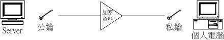

| |
最近更新日期：2006/09/19
本文已不再维护，更新文章请参考这里
|
一部连上 Internet 上面的您的个人主机，最重要的是什么呢？
大概就是如何让您自己可以联机进入自己的主机，并且进行所谓的『远程操控』了吧！
也就是说，您可以在任何具有连上 Internet 的计算机中，以远程联机软件连上 Internet
，并藉由您主机上面的远程联机服务器软件提供的功能，直接登入您的主机来进行操控的工作！此时，您将发现
Linux 有趣又好玩的地方啰！在早期的 Unix Like 机器当中，几乎都提供 Telnet 这个远程联机服务器软件，不过，
Telnet 本身是以『明码』来传送您操作的数据，安全上面是值得来思考要不要开放吶！
这个时候就有需要了解一下传送过程中以加密动作来传送数据封包的
SSH 这个远程联机服务器软件啦！
另外，除了纯文本接口登入主机来进行操控之外，在现在的 Linux distributions 当中，
还可以利用 X 相关的服务来帮助我们以图形接口登入喔！很棒吧！ ^_^
|
 本章的行前准备工作 本章的行前准备工作
在这个章节当中我们会使用客户端的联机软件联机到主机端来操作主机，所以你必须要了解到你的主机防火墙必须要开放，
并且要取消 SELinux 才行！另外，登入时会分析到的 PAM 模块也需要进行了解吶！
本章后半部会介绍 X Window 的远程登录，所以你也必须对于 X Server/client 的架构有点了解才行。
远程联机服务器
远程联机服务器对我们来说，可是一项很有用的工具啊！他可以让我们更方便的管理主机。
不过，方便是方便，安全性其实不很好的～所以，才要特别强调一下这个玩意儿啊！
什么是远程联机服务器
首先，我们要先来了解一下，什么是『 远程联机服务器』？
这个东西的功能为何？我想，您应该已经听过，一个良好的网络环境当中，一部开放到
Internet 上面的服务器，基本上，他可以不需要屏幕、键盘、鼠标等等的配备，
只要有基本的主板、CPU、RAM、硬盘再加上一块好一点的网络卡，并且连上
Internet ！哈哈！那么您要操控这部主机的时候，只要透过网络联机进来，然后进行任何修改即可！
嘿！所以啰，这个时候主机自然不需要接口设备啦！
以鸟哥个人为例，目前鸟哥管理大约七、八部左右的 Unix-Like 主机，
这些主机都不在同一个地方，分布在南台湾各处！那么当有新的套件的漏洞被发布，
或者是需要进行一些额外的设定的时候，是否鸟哥本人一定要到现场吗？当然不需要，
只要透过网络联机到该主机上面，就可以进行任何工作了！真的就好像在主机前面工作一般的轻松愉快！
^_^！这就是远程联机服务器啦！
远程联机服务器的功能当然还不只如此！举个例子来说：当您的工作需要使用到
Linux 的强大的编译功能时，那么您一定需要 Linux 对吧！而且最好是指令周期快一点的主机，
这个时候您可以将您研究室最快的那一部主机开放出来，设定一下远程联机服务器，让您的学生啦，
或者是研究室的同仁啦，可以透过这部机器帮他们进行研究的工作，这个时候，您的主机就可以让多人进行分享
Linux 运算的功能啦！
在早期的网络世界里，由于只有 Unix 机器，而且个人计算机还不流行的时候，
想要使用大型主机来进行数值程序的运算时(在我们工程界，比较常使用
Fortran 这一类的程序语言，至于 C 语言则较少碰～)，就需要向学校单位申请 Unix 工作站的账号，
并且以远程联机程序连进主机，以使用
Unix 的资源来进行我们的数值模式运算！所以啦，那个远程联机服务器的设定，
对于系统管理员是很重要的！尤其对于大型工作站类型的
Unix-Like 主机，由于很多人都需要使用到他的运算功能，或者是他的编译程序(
compiler )来进行运算，这时的远程联机就更形重要啦！
那么是否每一部连上 Internet 上面的主机都应该要开放远程联机的功能呢？其实并不尽然，
还是需要针对您的主机来进行规划的，我们底下分服务器与工作站来说明：
服务器类型( Server )的联机程序：
在一般开放因特网服务的服务器中，由于开放的服务可能会有较为重要的信息，
而远程联机程序连进主机之后，可以进行的工作又太多了(几乎就像在主机前面工作一般！)，
因此因特网的远程联机程序通常仅针对少部分系统维护者开放而已！
除非必要，否则
Server 类型的主机还真的不建议开放联机的服务呢！
以鸟哥为例，我的主机提供了我们研究室使用
Mail 与 Internet 上面的 WWW 服务，如果还主动提供远程联机的话，
那么万一不小心被入侵，那可就伤脑筋了！因此，鸟哥仅开放『很小部分的网域』让系统管理员连进来，
其他来源的 IP 一律抵挡！不许使用远程联机的功能呢！
工作站类型( Workstation )的联机程序：
至于工作站的情况就跟服务器不太一样了！工作站常常仅针对内部的几个使用者开放而已，
通常是不希望连上 Internet 的啦！而且所谓的工作站自然就是用来做工的！
例如鸟哥的其中一部 Linux 就是专门用来进行大型的数值模式计算仿真之用！
这个时候的远程联机服务器可能就得要对多人启动了！
因为工作站的强大运算功能可以让很多人一同使用他的计算能力！而且也可以免除每部计算机都得要安装
compiler 的窘境！要知道，某些工程用的 compiler 是粉贵的～
有哪些可供登入的类型？
那么目前远程联机服务器的主要类型有哪些？如果以显示的类型来分类，
基本上有文字接口与图形接口两种。
在文字类型登入方面的服务器，主要有以『明码』传送数据的
telnet 服务器，及以加密技术进行封包加密来传送的 SSH 服务器！虽然 telnet
可以支持的 client 端软件比较多，不过由于他是使用明码来传送数据，
您的资料很容易遭到有心人士的撷取！所以近来我们都呼吁大家多使用
SSH 这一种联机方式，而舍弃掉 telnet 这个比较不安全的咚咚啰！
至于图形接口的服务器，比较简单的有 Xdmcp ，架设 Xdmcp 很简单，
不过 client 端的软件比较少。另外一款目前很常见的服务器，就是 VNC (Virtual Network Computing)，
透过 VNC server/client 软件来进行连接。图形接口最大的优点是『图形』啊！
不过，因为是透过图形来传送，传输的数据量相当的大，所以速度与安全性都有待考虑。
因此，我们仅建议您将图形接口的远程登录服务器开放在内部网域 (LAN) 就好了！
那么什么是『明码』与『加密』的数据封包传送模式呢？
为什么 telnet 使用明码就比较不安全？所谓的明码就是：
『 当我们的数据封包在网络上流窜时，该数据封包的内容为数据的原始格式』，
还记得我们在 网络常用指令章节当中介绍的 tcpdump 吧？
我们在 telnet 下达的指令与密码等等，都会以类似 ASCII 的格式传送到主机端，
而主机端就藉由这些数据来下达指令。如果这些数据封包在经过某些
broadcast 或者是 Router 时，被有心人士捉去，那么他将会完整的取得您的数据喔！
所以啦，万一您的数据封包里面含有信用卡数据、密码、身份确认等重要信息时，是否很危险吶？！
因此，目前我们通常都希望使用可以将这些在网络上面跑的数据加密的技术，以增加数据在
Internet 上面传送的安全性啊！
Telnet 服务器
知道 telnet 是什么吗？咦！不就是连接 BBS 的工具吗？没错！他确实也是
BBS 软件类的一个服务器啦！不过这里我们暂不玩弄 BBS ！ telnet
可以说是历史相当悠久的远程联机服务器哩！而且支持他的软件也相当的多！例如知名的
netterm 就直接支持他啦！联机之后的界面也漂亮，在 client 端的中文传输与输入也没有问题！
相当的不错用！不过，他最麻烦的地方就是.....比较不安全而已啦～
底下我们谈一谈怎么启动与使用 telnet 服务器吧！
安装、启动与关闭服务
安装：
近年来由于 telnet 是以明码在传输的问题，所以在新的 Linux 版本上面， 已经都将
telnet 这个服务器排除在『先发名单』之外啦，也就是说，很多 Linux
distributions 预设是不安装 telnet 的，不过，在每个主要的 Linux distributions
还是有提供
telnet 套件在光盘当中啦！所以您要拿出原版光盘，并且安装好他就可以用啦！如何确认是否已经安装了
telnet 呢？最简单的方法就是使用最广泛被使用的 RPM 啦！
[root@linux ~]# rpm -qa | grep telnet
telnet-0.17-31.EL4.3
telnet-server-0.17-31.EL4.3
# 上面是 CentOS 4.x 预设的套件版本。如果是其他的 distribution，
# 档名可能会不太一样～可利用 yum 或 apt 等方式来安装喔！
|
需要特别留意的是，如果要提供 telnet 联机服务，通常需要安装两个 RPM 喔：
- 一个是 telnet，这个套件提供的是 telnet 客户端的联机程序；
- 另一个是 telnet-server 套件，这个才是真正的 Telnet server 软件喔！
如果找不到 telnet-server 的话，请拿出原版光盘来安装，或者直接使用 yum 吧！
否则就无法进行下一步的设定啦！^_^
还记得『 鸟哥的 Linux 私房菜 -- 基础学习篇』里面的
『 认识服务( daemon )』那个章节吧？
要记得 super daemon 呦！因为我们的
telnet 就是挂在 super daemon 底下的一支服务而已！那个咚咚就是有名的 xinetd 啰！
Tips:
在某些旧版的套件上面也有使用 inetd 的，启动的方式有点不太一样，不过差异不大啦！
只要懂得基本的常识，那么就不会有问题啰！所以鸟哥才会要大家先读完
Linux 基础篇 啦！
|  |
启动的方式就是：
- 将 xinetd 里面关于 telnet 的项目开启，然后
- 重新启动一次 xinetd 就成功啦！
那么如何开启 telnet 的项目呢？很简单，有两个方式：
- 使用 ntsysv 或
chkconfig：
还记得 Red Hat 系列(含 CentOS)的套件里面的 ntsysv
这个好用的东西吗？对了，在 CentOS 底下有这么一个好用的设定工具，您可以使用
ntsysv
出现的窗口之中，将 telnet 勾选起来，然后按下 OK 离开即可啰！
- 使用 vi 修改
/etc/xinetd.d/telnet 这个档案：
那么如果不是 Red Hat 系列的 Linux 系统呢？基本上， ntsysv 也只是修改 /etc/xinetd.d
这个目录下的数据而已，所以我们当然可以手动自己修改他啦！
[root@linux ~]# vi /etc/xinetd.d/telnet
service telnet
{
flags = REUSE
socket_type = stream
wait = no
user = root
server = /usr/sbin/in.telnetd
log_on_failure += USERID
# disable = yes
disable = no
# 基本上，改上面这两行就够了！将 disable 设定成 no 表示要启动！
}
|
设定完开启之后，自然就是要启动啦，刚刚提到 telnet
是挂在 xinetd 底下的，所以自然只要重新启动 xinetd 就能够将 /etc/xinetd.d/ 里头的设定重新读进来，
所以刚刚设定启动的
telnet 自然也就可以被启动啦！而启动的方式也有两种方式，其中 service 这个指令仅支持在
CentOS 与 Mandriva 底下，所以通常鸟哥还是以 /etc/init.d 底下的 scripts
为启动的主要方法啦！
仅适合 Red Hat 系列 / Mandriva 系列的主机启动方式
[root@linux ~]# service xinetd restart
Stopping xinetd: [ OK ]
Starting xinetd: [ OK ]
适合各版本的主机启动方式
[root@linux ~]# /etc/init.d/xinetd restart
Stopping xinetd: [ OK ]
Starting xinetd: [ OK ]
# 某些版本并没有 restart 的选项，这个时候就需要：stop 再 start 啰！
|
那么要看有没有启动服务呢？怎么看？其实也很简单啦，还记得我们在前几章提到的『
限制 Linux port 的联机 』那一章吗？使用
netstat
就可以啦！
[root@linux ~]# netstat -tlup
Active Internet connections (only servers)
Proto Recv-Q Send-Q Local Address Foreign Address State PID/Program name
tcp 0 0 *:telnet *:* LISTEN 23817/xinetd
|
看到了吗？没错，那个 telnet 就是启动的项目啦！那么要如何关闭呢？呵呵！
那就真的是太简单啦！就将刚刚的步骤再做一次，而将设定值转变一下即可！步骤如下啦！
Tips:
这里考一个问题，那个 port 对应的服务名称在哪一个档案里面查询到的呢？
在每一个 Linux 系统都有的档案呦！忘记了呀！？再回到前面看看
限制 Linux port 的联机 ，
然后用 vi 去看看那一个档案的内容吧！ ^_^
| |
Step 1: 修改配置文件
[root@linux ~]# vi /etc/xinetd.d/telnet
service telnet
{
flags = REUSE
socket_type = stream
wait = no
user = root
server = /usr/sbin/in.telnetd
log_on_failure += USERID
disable = yes <== 就是这里啦！将他改成 yes 就是关闭！
}
Step 2: 重新启动 xinetd 这个 super daemon
[root@linux ~]# /etc/init.d/xinetd restart
|
好用的联机软件
刚刚上面提到的都是在服务器端的设定而已！那么在客户端有什么好用的软件可以连上
Server 的呢？最常见到的应该就是 netterm 这个鼎鼎大名的联机软件了吧！
我想，只要玩过 BBS 的大概都晓得这个软件才对！所以这里就不提了！
另外，目前几乎所有的操作系统都提供了 telnet 这个程序，这个程序可以直接轻易的就连上
telnet server 呢！例如您要在 Linux 上面连上自己的 telnet 服务器，可以这样做：
[root@linux ~]# telnet localhost
Trying 127.0.0.1...
Connected to localhost.localdomain (127.0.0.1).
Escape character is '^]'.
CentOS release 4.4 (Final)
Kernel 2.6.9-42.0.2.EL on an i686
login: dmtsai <== 就是这里啦！请输入『一般』账号，不能用 root 喔！
Password: <== 这里输入该账号的密码！请注意，输入时，屏幕不会有任何信息！
Last login: Fri Jul 1 09:31:21 from 127.0.0.1 <== 上次登入的信息为何?
[dmtsai@linux ~]$ <== 这里就是已经登入的地方！亦即远程主机了！
[dmtsai@linux ~]$ exit <== 这样就能够离开 telnet 与远程主机咯！
|
这样就联机进来啦！很简单吧！那么在 Windows 的环境底下呢？同样的，也是可以使用
telnet 的程序联机到 Linux 的 telnet server 里面来！没有问题的啦！可以依序这样做：
- 按下 Windows 内的 『开始』
- 选择 『执行』
- 在出现的窗口中输入 『telnet your.IP.or.hostname』
这样就可以进入 Linux 的环境中了！很方便吧！当然啦！您也可以使用类似
netterm 这个很棒的联机软件来联机的，这里我们就不示范啦！
Tips:
在 Linux tty1 ~ tty6 的终端机默认模式下，我们是没有办法看到中文的！
除非安装某些特殊的中文接口才行！比如 JMCCE 之类的咚咚！
因为不是很重要，所以鸟哥这里就不加介绍了。 ^_^
| |
另外，需要先留意的是，为了系统安全的考虑， 预设的 telnet
是『不允许』使用 root 这个账号登入的～
这个很重要喔！您不要使用 root 尝试登入 telnet 啊！ ^_^
iptables, TCP_Wrappers, 纯建议
telnet 这个服务器方便归方便，但 总是一个不太好的联机解决方案，
因为毕竟他是一个以『明码』传输的协议，所以很不适合在 Internet 上面使用啦！
你总不希望你的账号密码在 Internet 上面被窃取吧？不过，如果 telnet 是启动在内部环境当中那就还好啦！
尤其有些朋友因为旧软件的关系，还是需要使用到 telnet 来联机。那么我们就提一些基本的注意事项好了！
以比较限制的配置文件来规范联机的 IP ：
事实上， xinetd 就已经提供些许的保护措施了，
您可以针对您主机的多重接口(有对内以及对外喔！)来提供不同保护等级的措施！
底下列出一个范例，不过，更多的信息请再回到『 鸟哥的
Linux 私房菜 -- 基础学习篇』当中去查阅一下
『 认识服务
』那一章里面的详细设定说明，或者直接 man xinetd.conf 吧！
[root@linux ~]# vi /etc/xinetd.d/telnet
# This file had been modified by VBird 2002/11/04
# 首先为内部网络的参数设定
service telnet
{
disable = no
bind = 192.168.1.2
only_from = 192.168.1.0/24
# 上面这两行说明仅提供内部网域！
instance = UNLIMITED
nice = 0
flags = REUSE
socket_type = stream
wait = no
user = root
server = /usr/sbin/telnetd
server_args = -a none
log_on_failure += USERID
}
# 再来则是针对外部网域的设定
service telnet
{
disable = no
bind = 140.116.142.196
only_from = 140.116.0.0/16
no_access = 140.116.32.{10,26}
# 上面这三行设定外部较为严格的限制
instance = 10 <==最多允许同时 10 个联机
umask = 022
nice = 10
flags = REUSE
socket_type = stream
wait = no
user = root
server = /usr/sbin/telnetd
server_args = -a none
log_on_failure += USERID
}
|
既然 telnet 不是很安全，自然预设的情况之下就是无法允许
root 以 telnet 登入 Linux 主机的！但事实上， telnet
只是利用一些较为安全的机制 (其实就是 PAM 模块啦) 来防止
root 登入而已～所以啰，假如您确定您的环境够安全(例如您的主机并没有连上
Internet )，并且想要开放 root 以 telnet 登入 Linux 主机的话，请直接将 /etc/securetty
更改檔名即可！
[root@linux ~]# mv /etc/securetty /etc/securetty.bak
|
这样一来，root 就可以登入啦！不过，相当的不建议这样做喔！毕竟不是很安全啦！此外，您也可以藉由修改
pam 模块来达成同样的功能！修改 /etc/pam.d/login 这个档案的第二行设定即可：
[root@linux ~]# vi /etc/pam.d/login
#%PAM-1.0
#auth required pam_securetty.so <== 就是这样一行，将他批注即可！
auth required pam_stack.so service=system-auth
auth required pam_nologin.so
account required pam_stack.so service=system-auth
password required pam_stack.so service=system-auth
# pam_selinux.so close should be the first session rule
session required pam_selinux.so close
session required pam_stack.so service=system-auth
session required pam_loginuid.so
session optional pam_console.so
# pam_selinux.so open should be the last session rule
session required pam_selinux.so multiple open
|
如此一来， root 将可以直接进入 Linux 主机了！不过，既然我们可以透过 su 或 sudo 来切换身份，
那么干嘛还需要开放 root 用 telnet 登入主机呢？真是没必要～所以，
还是不建议如此做的！
加上防火墙 iptables：
针对 telnet 加设防火墙 iptables 是一个好主意！如果您已经参考了前面章节提到的『
简易防火墙架设 』一文，并且使用里面的
scripts 的话，那么不用担心 telnet 啦！基本上，他原本就仅对内部开放 telnet
，外部是无法连上您的 telnet 的！但是，若是您自己设定了自己的防火墙机制之后，那么想要针对
192.168.0.0/24 这个网域，及 61.xxx.xxx.xxx 这个 IP 进行 telnet 的开放呢？可以增加这几行在您的
iptables 规则之内(请注意：防火墙的规则顺序是很重要的！所以再回头看看
简易防火墙架设 一文是有必要的！)
iptables -A INPUT -p tcp -i $INIF -s 192.168.0.0/24 --dport 23 -j ACCEPT
iptables -A INPUT -p tcp -i $EXTIF -s 61.xxx.xxx.xxx --dport 23 -j ACCEPT
iptables -A INPUT -p tcp -i $EXTIF --dport 23 -j DROP
|
上面的规则中，$EXTIF 指的是对外的联机接口，$INIF 则是对内的接口。
第一、二行是针对来源的 IP 来开放 port 23 亦即是 telnet 的协议啦！
而最后一行则是将其他的所有来源的，想要连上
telnet 的联机封包都丢掉的意思！怎么样！很简单吧！
防火墙的机制是越多越好！永远也不嫌多的啦！这里也可以使用 TCP_Wrappers
的机制呢！刚刚是开放了 192.168.0.0/24 这个网段，但是如果您只想要其中的
192.168.0.1 ~ 192.168.0.5 进入呢？而其他的 IP 只要一经联机，就会被记录该
IP ，以提供 root 查询呢？可以这样做：
[root@linux ~]# vi /etc/hosts.allow
in.telnetd: 192.168.0.1, 192.168.0.2, 192.168.0.3, 192.168.0.4
in.telnetd: 192.168.0.5
[root@linux ~]# vi /etc/hosts.deny
in.telnetd : ALL : spawn (/bin/echo Security notice from `/bin/hostname`; \
/bin/echo; /usr/sbin/safe_finger @%h ) | \
/bin/mail -s "%d -%h security" root@localhost & \
: twist ( /bin/echo -e "\n\nWARNING connectin not allowed. \n\n\n" )
|
事实上， telnet 最大的不安全在于数据是以明码传输，所以在 Internet
这个大家都能够连上的地方来传输数据时，实在很不安全！所以：
- 非必要时，不要启动 telnet ，如果真的需要启动 telnet
，那么也请在启动并且使用完毕之后，立即将他关掉！
- 如果确定真的要启动 telnet 时，请确定好限制的联机范围，使用
iptables 来设定联机的限制区域；
- 加上 TCP_Wrappers 的辅助，加强防火墙的功能！
- 随时注意登录档案里面关于 login 的事项！并且不要让
root 能以 telnet 登入 Linux 主机！
SSH 服务器
既然 telnet 的数据在 Internet 上不是很安全，那么我又需要以远程联机服务来操控我的 Linux
主机，那么应该怎么办呀？最好的方法当然就是以较为安全的联机机制来解决联机的问题啰！
那么该如何解决这样的问题呢？这也不难啦，使用
SSH 即可。那么 SSH 是什么呢？他有什么特异功能？
简单的来说， SSH
是 Secure SHell protocol 的简写，他可以经由将联机的封包加密的技术，
来进行数据的传递，因此，数据当然就比较安全啰！这个
SSH 可以用来取代 Internet 上面较不安全的 finger, R Shell (rcp, rlogin,
rsh 等指令), talk 及 telnet 等联机模式。底下我们将先简介一下 SSH 的联机模式，来说明为什么
SSH 会比较安全呢！
特别注意：这个 SSH 协议，在预设的状态中，本身就提供两个服务器功能：
- 一个就是类似 telnet 的远程联机使用 shell 的服务器，亦即是俗称的 ssh ；
- 另一个就是类似 FTP 服务的 sftp-server ！提供更安全的 FTP 服务。
联机加密技术简介：
什么是『数据加密』呢？简单的说，就是将人们看的懂得电子数据，经过一些运算，
让这些数据变成没有意义的(至少对人类来说)咚咚，然后这个咚咚可以在网络上面传输，
而当用户想要查阅这个数据时，再透过反向运算，将这些咚咚反推出原始的电子数据。
由于这些数据已经被重新处理过，所以，即使数据在 Internet 上被 cracker
监听而窃取，他们也不容易就推算得出来原始资料内容的。
网络封包的加密技术通常是藉由所谓的『 一对公钥与私钥』
亦即『 Public and Private 组合成的 key pair』
来进行加密与解密的动作！如下图所示。主机端所要传给 client 端的数据，会先经由公钥加密后才到网络上传输。
而到达 client 端之后，再经由私钥将加密的数据解开来～由于在 Internet 上面跑的数据是加密过后的，
所以你的数据内容当然就比较安全啦！

图一、公钥与私钥在进行数据传输时的角色示意图
Tips:
数据加密的技术真的相当的多，也各有其优缺点，有的指令周期快，
但是不够安全；有的够安全，但是加密/解密的速度较慢～
目前在 SSH 使用上，主要是利用 RSA/DSA/Diffie-Hellman 等机制喔！
| |
那么这些公钥与私钥是如何产生的呢？底下我们来谈一谈目前
SSH 的两种版本的联机模式啰！
SSH protocol version 1：
每一部 SSH 服务器主机都可以使用 RSA 加密方式来产生一个 1024-bit 的 RSA Key ，
这个 RSA 的加密方式，主要就是用来产生公钥与私钥的演算方法！这个
version 1 的整个联机的加密步骤可以简单的这么看：
- 当每次 SSH daemon (sshd) 启动时，就会产生一支 768-bit
的公钥(或称为 server key)存放在 Server 中；
- 若有 client 端的 ssh 联机需求传送来时，那么 Server 就会将这一支公钥传给
client ，此时 client 也会比对一下这支公钥的正确性。比对的方法为利用
/etc/ssh/ssh_known_hosts 或 ~/.ssh/known_hosts 档案内容。
- 在 Client 接受这个 768-bit 的 server key 之后，Client 自己也会随机产生一支
256-bit 的私钥(host key)，并且以加密的方式将 server key 与 host key 整合成一对完整的
Key pair，并且将这对 Key pair 也传送给 server ；
- 之后，Server 与 Client 在这次的联机当中，就以这一对 1024-bit 的 Key pair 来进行数据的传递！
也就是说，Public Key 是放在 Server 上的，而 Client 端的软件必须要能接受 Public Key 以及计算出
Private Key 以组合成为一把独一无二的 key pair ，因为 Client 端每次的 256-bit 的 Key
是随机取的，所以您这次的联机与下次的联机的 Key 可能就会不一样啦！此外在 Client 端的用户家目录下的
~/.ssh/known_hosts 会记录曾经联机过的主机的 public key ，用以确认每次来自该主机的联机是正确的。
这个 ~/.ssh/known_hosts 档案的意义后续还会介绍的。
在 SSH version1 的联机过程当中，当 server 端接受 client 端的 private key 后，就不再针对该次联机的
key pair 进行检验。此时若有恶意的 cracker 针对该联机给予恶意的程序代码时，由于主机端不会检验联机的正确性，
因此可能会接受该程序代码，进一步造成系统被黑掉的问题。
为了改正这个缺失，SSH version 2 多加了一个确认联机正确性的 Diffie-Hellman 机制，
在每次数据的传输当中 server 端都会以该机制检查数据的来源是否正确，
所以可以避免联机过程当中被插入恶意代码的问题！
也就是说， ssh version 2 是比较安全的喔！
由于 SSH version 1 本身存在着的一些问题，因此，近来我们都希望大家使用 ssh version 2 的联机模式，
会比较安全一点。而联机版本的设定则需要在 ssh 主机端与客户端均设定好才行喔！
启动 SSH 服务：
事实上，在我们使用的 Linux 系统当中，默认就已经含有 SSH 的所有需要的套件了！
这包含了可以产生密码等协议的 OpenSSL
套件与 OpenSSH
套件，所以呢，要启动 SSH 真的是太简单了！就直接给他启动就是了！此外，在目前的
Linux Distributions 当中， 都是预设启动 SSH 的，
所以一点都不麻烦，因为不用去设定，他就已经启动了！哇！真是爽快～无论如何，
我们还是得说一说这个启动的方式吧！直接启动就是以
SSH daemon ，简称为 sshd 来启动的，所以，手动可以这样启动：
[root@linux ~]# /etc/init.d/sshd restart
[root@linux ~]# netstat -tlp
Active Internet connections (only servers)
Proto Recv-Q Send-Q Local Address Foreign Address State PID/Program name
tcp 0 0 *:ssh *:* LISTEN 24266/sshd
|
启动后，利用 netstat 查阅一下
sshd 这个程序是否正确的在 LISTEN 即可！当然，这个时候您的 SSH 服务器设定值均是使用系统默认值，
能不能够仅用较安全的 version 2 ，则需要进一步的设定呢。
接下来，如果您想要在开机就启动 SSH 的话(预设也是启动的！)，可以利用
chkconfig
来设定开机启动即可。
虽然新的 Linux distributions 都预设会有 SSH 存在的，但是较旧的版本就仅有 telnet 而已。
例如 Red Hat 6.x 之前的版本。那么如果您想要在旧的 distributions 当中安装 SSH 该如何是好？
嘿嘿！可以参考一下鸟哥之前写过的一篇咚咚，有详细的说明 tarball 的安装流程哩！
需要注意的是， SSH 不但提供了 shell 给我们使用，亦即是 ssh protocol
的主要目的，同时亦提供了一个较为安全的 FTP server ，亦即是 ssh-ftp server
给我们当成是 FTP 来使用！所以， 这个 sshd 可以同时提供
shell 与 ftp 喔！而且都是架构在 port 22 上面的呢！所以，底下我们就来提一提，那么怎么样由
Client 端连接上 Server 端呢？同时，如何以 FTP 的服务来连接上 Server 并且使用
FTP 的功能呢？
ssh 客户端联机：
由于 Linux 与 Windows 这两个客户端 Client 联机软件/指令并不一样，所以我们分别来介绍可以使用的指令：
Linux Client: ssh
SSH 在 client 端使用的是 ssh 这个指令，这个指令可以指定联机的版本 (version1, version2)，
还可以指定非正规的 ssh port (正规 ssh port 为 22)。不过，一般的用法可以使用底下的方式：
1. 直接登入到对方主机的方法：
[root@linux ~]# ssh account@hostname
# 连接到我们自己本机上面的 ssh 服务！更多讯息，请 man ssh 喔！
[root@linux ~]# ssh dmtsai@localhost
The authenticity of host 'localhost (127.0.0.1)' can't be established.
RSA key fingerprint is f8:ae:67:0e:f0:e0:3e:bb:d9:88:1e:c9:2e:62:22:72.
Are you sure you want to continue connecting (yes/no)? yes
# 上面很重要喔！务必填入完整的 "yes" 而不是 Y 或 y 而已。
Warning: Permanently added 'localhost' (RSA) to the list of known hosts.
dmtsai@localhost's password: <== 在这里填入密码，同样的，屏幕不会有讯息的！
Last login: Fri Jul 1 14:23:27 2005 from localhost.localdomain
[dmtsai@linux ~]$ <== 瞧！已经登入啰～
[dmtsai@linux ~]$ exit <== 输入 exit 就能够离开对方主机啰！
2. 不登入对方主机，直接在对方主机执行指令的方法：
[root@linux ~]# ssh dmtsai@localhost date
dmtsai@localhost's password:
Tue Nov 22 11:57:27 CST 2005
[root@linux ~]#
# 看！身份还是 root 喔！只是以 dmtsai 的身份在远程主机上执行了一个指令而已！
|
这里请特别留意的是，如果直接以『 ssh hostname
』这个指令来连接进入 hostname 这个主机时，则 进入 hostname
这个主机的『账号名称』将会是目前您所在的这个环境当中的使用者账号！
以上面为例，因为我是以 root 的身份在执行，所以如果我执行了『 ssh host.domain.name 』时，
那么对方 host.domain.name 这部主机，就会以 root 的身份来让我进行密码确认的登入动作！
因此，为了避免这样的麻烦，通常鸟哥都是以简单的 e-mail 的写法来登入远方的主机，
例如『 ssh user@hostname 』即表示，
鸟哥是以 user 这个账号去登入 hostname 这部主机的意思。当然，也可以使用
-l username 这样的形式来书写！登入对方主机之后，其他的所有执行行为都跟在
Linux 主机内没有两样～所以，真的是很简单吧！ ^_^ 这样就可以达到远程控管主机的目的了！
此外， 在预设的情况下， SSH 是『允许您以 root 的身份登入』喔
！呵呵！更是爽快啦！要特别留意的是，当您要连接到对方的主机时，如果是首次连接，那么
Server 会问您，您的联机的 Key 尚未被建立，要不要接受 Server 传来的 Key
，并建立起联机呢？呵呵！这个时候请『 务必要输入 yes
而不是 y 或 Y』，这样程序才会接受喔！
关于 Server Keys 的纪录数据： ~/.ssh/known_hosts
如果您刚刚有研究过 SSH 的联机流程的话，会发现到当 client 端接受来自 server 端的
public key 之后，会主动的比对这支 Key 的正确性。而比对的档案是 ~/.ssh/known_hosts 。
若是接受到的这支 public key 并没有被纪录在这档案内，那么上面表格的讯息，
就是要您回答 yes/no 的那个讯息才会出现～而您回答 yes 之后，该 public key
信息就会被记录起来，以留待下次登入同一部主机时的检查之用啊！
如果 Server Key 与 ~/.ssh/known_hosts 比对成功，
那么您就会直接进入等待密码输入的画面，
那就不必每次都得要输入 (yes/no) 啰～
不过，您或许也会发现一件事情啊，我们知道 SSH server 虽然使用 version 2 已经不会重复制造
server key (public key) 了，但是如果该主机重新安装过新的 linux distributions 时，
那把 server key 就会被改变啊！而 client 又会去比对这个 public key 与 ~/.ssh/known_hosts ，
此时 Client 就会发现两者不同了，于是乎产生如下的错误讯息了：
[root@linux ~]# ssh dmtsai@localhost
@@@@@@@@@@@@@@@@@@@@@@@@@@@@@@@@@@@@@@@@@@@@@@@@@@@@@@@@@@@
@ WARNING: REMOTE HOST IDENTIFICATION HAS CHANGED! @
@@@@@@@@@@@@@@@@@@@@@@@@@@@@@@@@@@@@@@@@@@@@@@@@@@@@@@@@@@@
IT IS POSSIBLE THAT SOMEONE IS DOING SOMETHING NASTY!
Someone could be eavesdropping on you right now (man-in-the-middle attack)!
It is also possible that the RSA host key has just been changed.
The fingerprint for the RSA key sent by the remote host is
f8:ae:67:0e:f0:a0:3e:aa:d9:77:19:c9:2e:62:22:72.
Please contact your system administrator.
Add correct host key in /root/.ssh/known_hosts to get rid of this message.
Offending key in /root/.ssh/known_hosts:1
RSA host key for localhost has changed and you have requested strict checking.
Host key verification failed.
|
这个错误讯息在告诉您，上次所登录的远程 SSH 主机的 Keys
已经被改过了(最可能的原因就是 Server 端重新启动/重新安装/更新套件等等啦！)，
所以无法继续登入～呵呵！这个时候怎么办？很简单啊！ 进入您的家目录的
~/.ssh 里面，编辑一下 known_hosts ，将欲连接的主机名的 Key 给他消除，就可以重新联机啦！
[root@linux ~]# vi ~/.ssh/known_hosts
localhost ssh-rsa AAAAB3NzaC1yc2Euowireffodjoiwjefmoeiwhoqhwupoi
t[egmlomowimvoiweo6VpTHTw2/tENp4U7Wn8J6nxYWP36YziFgxtWu4MPSKaRmr
E4eUpR1G/zV3TkChRZY5hGUybAreupTVdxCZvJlYvNiejfijoejwiojfijeoiwx5
eRkzvSj7a19vELZ5f8XhzH62E=
|
上面表格的内容其实是同一行的～那一行代表『 localhost 这部主机，利用的是 ssh-rsa 联机机制，
而后续的数据则是那把 Server Key 的内容。』如果您确定这次的比对无法成功是正常的，
那么您可以将这一行给他删除，这样下次要再登入时，就又会再次的出现问 (yes/no) 的画面啊！
那么如何使用 SSH FTP 的功能呢？也是很容易啦！就是使用
sftp 这支程序即可！而登入的方式与 ssh 相同，都是使用 sftp -l username hostname
或者直接以 sftp user@hosname 来书写！执行之后会有底下的模样：
[root@linux ~]# sftp dmtsai@localhost
Connecting to localhost...
dmtsai@localhost's password: <== 这里请输入密码啊！
sftp> <== 这里就是在等待您输入 ftp 相关指令的地方了！
|
进入到 sftp 之后，那就跟在一般 FTP 模式下的操作方法没有两样了！底下我们就来谈一谈，
sftp 这个接口下的使用指令吧！
| 针对远方主机(Server)之行为 |
| 变换目录到 /etc/test 或其他目录 |
cd /etc/test
cd PATH |
| 列出目前所在目录下的文件名 |
ls
dir |
| 建立目录 |
mkdir directory |
| 删除目录 |
rmdir directory |
| 显示目前所在的目录 |
pwd |
| 更改档案或目录群组 |
chgrp groupname PATH |
| 更改档案或目录拥有者 |
chown username PATH |
| 更改档案或目录的权限 |
chmod 644 PATH
其中，644 与权限有关！回去看基础篇！ |
| 建立连结档 |
ln oldname newname |
| 删除档案或目录 |
rm PATH |
| 更改档案或目录名称 |
rename oldname newname |
| 离开远程主机 |
exit (or) bye (or) quit |
| 针对本机(Client)之行为(都加上 l, L 的小写 ) |
| 变换目录到本机的 PATH 当中 |
lcd PATH |
| 列出目前本机所在目录下的文件名 |
lls |
| 在本机建立目录 |
lmkdir |
| 显示目前所在的本机目录 |
lpwd |
| 针对资料上传/下载的行为 |
| 将档案由本机上传到远程主机 |
put [本机目录或档案] [远程]
put [本机目录或档案]
如果是这种格式，则档案会放置到目前远程主机的目录下！ |
| 将档案由远程主机下载回来 |
get [远程主机目录或档案] [本机]
get [远程主机目录或档案]
若是这种格式，则档案会放置在目前本机所在的目录当中！可以使用通配符，例如：
get *
get *.rpm
亦是可以的格式！ |
就整体而言， sftp 在 Linux 底下，如果不考虑图形接口，那么他已经可以取代
FTP 了呢！因为所有的功能都已经涵盖啦！因此，在不考虑到图形接口的 FTP 软件时，可以直接关掉
FTP 的服务，而改以 sftp-server 来提供 FTP 的服务吧！ ^_^
如果我要在两个主机之间复制档案的话，除了 sftp 之外，还有没有更简单的方式？
有的，那就是利用 scp 这个指令啦！这个指令的用法与 cp 很相像，不过，
在远程主机的目录写法，比较需要注意就是了。举例如下：
1. 将数据由本机上传到远程主机上去
[root@linux ~]# scp /etc/crontab dmtsai@localhost:/home/dmtsai/
dmtsai@localhost's password: <== 这里请输入密码啊！
crontab 100% 620 0.6KB/s 00:00
# 这个例子在说明，我将本机目录的 /etc/crontab 这个档案传送给 dmtsai
# 这个使用者，而这个使用者是在 "localhost" 那部主机上面喔！
# 仔细看一下，会有一个传输数据的讯息跑出来喔！
2. 将数据由远程主机下载到本机上！
[root@linux ~]# scp dmtsai@localhost:~/.bashrc .
# 这个例子则是在说明，我要将 localhost 那部机器上的 dmtsai 这个人，
# 他家目录下的 .bashrc 复制到我的机器上！
|
也就是说，远程主机上的档案或目录要复制时，是以『 hostname:PATH 』
方式来书写的～不要写错了呦！而如果想要复制目录的话，那么可以加上 -r 的参数！
在 Linux 底下想要连接 SSH 服务器，可以直接利用 ssh 这个指令
，那么如果在 Windows 操作系统底下，又该如何连接到 SSH 服务器呢？可以直接使用
putty 或 pietty 这种类型的联机软件呢，他也是免费的自由软件喔！取得的方式可以参考底下的网站：
在 putty 的官方网站上有很多的 client 软件可以使用的，包括 putty/pscp/psftp 等等。
他们分别对应了 ssh/scp/sftp 这三个指令就是了。而上述的三个 putty/pscp/psftp 主要是在 Windows
上面连接到 Unix like 机器的 SSH 服务器的 Client 软件呢。请自行下载该软件喔。
事实上，鸟哥比较喜欢林弘德先生的 pietty，因为这个软件不但是完整支持 putty
，而且提供的文字编码较丰富， 实在很好用。在你下载了 pietty 后直接双击他，
会有类似底下的图示出现。
图二、pietty 的执行图示之一
在上图 1 的地方请填写相关的主机名或者是 IP ，2 当然务必选择 SSH 那一项，
至于 3 的地方，鸟哥比较喜欢选单出现的样式，所以我是选择选单啦！若没有问题，按下『联机』后，
就会出现如下样式：
图三、pietty 的执行图示之一
很像在主机前面工作吧！而且上头还有选单可以随时调整类似字形、字体、字符编码等等。
尤其是字符编码。有时候你会发现开启档案时，竟然画面当中会有乱码而不是正常的中文显示，
那就是编码的问题。要解决这个问题时，你必须要牢记：
- 文本文件本身在存档时所挑选的语系；
- Linux 主机本身所使用的语系 (可用 LANG 变量调整)；
- pietty 所使用的语系。
这三个咚咚的语系要完全相同时才会正确的显示出中文！千要要牢记啊！
那如何调整 pietty 的中文编码呢？
图四、pietty 的执行图示之一
在『选项』的『字符编码』里面可以挑选 big5 或者是 utf8 的中文编码，
让他符合你的 Linux 与档案所储存的数据格式，那就 OK 的啦！ ^_^！
如果想要作更细部的设定时，可以选择图四上头最底下的那个『详细设定』项目，
就会出现如下图示。其中更为重要的是『键盘右侧的数字键想要生效』时，
可以按照下图的指示来启动数字键的功能：
图五、pietty 的执行图示之一
如上图所示，在你输入『Apply』之后，就可以自动的生效了！现在你可以按键盘右边的按钮了，
真方便。再来你可以调整 pietty 滚动条的记忆行数，这样当数据太多时，你依旧可以调整滚动条来查阅之前的数据。
设定的方法如下：
图六、pietty 的执行图示之一
调整完了屏幕的大小之后，再来这是最重要的：『您要以哪一个版本的 SSH
算法登入？！』前面说过，我们预设是以 version2 来登入的，所以这里我们可以调整为
2 那个项目！这样每次登入都会以 version 2 的模式登入主机了！
图七、pietty 的执行图示之一
整个 pietty 大致上的流程就是这样！如此一来，您就可以在 Windows 上面以
SSH 的协议，登入远程的 Linux 主机噜！粉方便吧！ ^_^ ！
那么如果想要中文支持的话，目前
pietty 已经支持中文啦！您可以输入中文喔！不过需要修改一下字符集，
选择图四的『选项』内的『字型』，会出现如下图示：
图八、pietty 的执行图示之一
将(1)字型设定为细明体
(2)字集设定为『Big5』，如此一来，您的 pietty 就支持中文的输入啰！ ^_^
那么上面我们作的这些设定值都记录在哪里啊？呵呵！都记录在 Windows 的登录文件当中啊！
您可以在 Windows 的系统当中，在『开始』-->『执行』后，出现的框框内输入『regedit』，
之后会出现一个大窗口。请在左边的画面当中选择『
HKEY_CURRENT_USER --> Software --> SimonTatham --> PuTTY --> Sessions』，
就可以看到您的设定值啰！ ^_^！ 这样，也就可以储存您的设定值啰～
在 putty 的官方网站上也提供 psftp 这支程序。这一支程序的重点则是在于以 sftp
联机上 Server 。联机的方式可以直接点选
psftp 这个档案，让他直接启动，则会出现下面的图样：
psftp: no hostname specified; use "open host.name" to connect
psftp>
|
这个时候可以填入您要连接上去的主机名，例如我的区域内网络 linux.dmtsai.tw 这个主机
psftp: no hostname specified; use "open host.name" to connect
psftp> open test.linux.org
login as: dmtsai
Using username "dmtsai".
dmtsai@linux.dmtsai.tw's password:
Remote working directory is /home/dmtsai
psftp> <== 这里就在等待您输入 FTP 的指令了！
|
呵呵！这样就登入主机啦！很简单吧！然后其他的使用方式跟前面提到的 sftp 一样哩！加油的使用吧！
那么 SSH 所提供的 sftp 功能只能利用纯文本接口的 psftp 来联机吗？有没有图形接口的软件呢？呵呵！当然有！
那就是非常有用的 Filezilla 啰！Filezilla 是图形接口的一个 FTP 客户端软件，使用上非常的方便，
至于详细的安装与使用流程请参考 vsftpd 章节的说明喔！
详细设定 sshd 服务器
基本上，所有的 ssh 相关设定都放在 /etc/ssh/sshd_config
里面！不过，每个 Linux distribution 的预设设定都不太相同，
所以我们有必要来了解一下整个设定值的意义为何才好！
[root@linux ~]# vi /etc/ssh/sshd_config
# 1. 关于 SSH Server 的整体设定，包含使用的 port 啦，以及使用的密码演算方式
# 先留意一下，在预设的档案内，只要是被批注的设定值(#)，即为『默认值！』
Port 22
# SSH 预设使用 22 这个port，也可以使用多个port，即重复使用 port 这个设定项目！
# 例如想要开放 sshd 在 22 与 443 ，则多加一行内容为：
# Port 443
# 这样就好了！不过，不建议修改 port number 啦！
Protocol 1,2
# 选择的 SSH 协议版本，可以是 1 也可以是 2 ，
# 如果要同时支持两者，就必须要使用 2,1 这个分隔了(Protocol 1,2)！
# 目前我们会建议您，直接使用 Protocol 2 即可！
#ListenAddress 0.0.0.0
# 监听的主机适配器！举个例子来说，如果您有两个 IP，
# 分别是 192.168.0.100 及 192.168.2.20 ，那么只想要
# 开放 192.168.0.100 时，就可以写如同下面的样式：
ListenAddress 192.168.0.100
# 只监听来自 192.168.0.100 这个 IP 的SSH联机。
# 如果不使用设定的话，则默认所有接口均接受 SSH
#PidFile /var/run/sshd.pid
# 可以放置 SSHD 这个 PID 的档案！左列为默认值
#LoginGraceTime 2m
# 当使用者连上 SSH server 之后，会出现输入密码的画面，在该画面中，
# 在多久时间内没有成功连上 SSH server ，就断线！若无单位则默认时间为秒！
#Compression yes
# 是否可以使用压缩指令？当然可以啰
# 2. 说明主机的 Private Key 放置的档案，预设使用下面的档案即可！
#HostKey /etc/ssh/ssh_host_key # SSH version 1 使用的私钥
#HostKey /etc/ssh/ssh_host_rsa_key # SSH version 2 使用的 RSA 私钥
#HostKey /etc/ssh/ssh_host_dsa_key # SSH version 2 使用的 DSA 私钥
# 还记得我们在主机的 SSH 联机流程里面谈到的，这里就是 Host Key ～
# 2.1 关于 version 1 的一些设定！
#KeyRegenerationInterval 1h
# 由前面联机的说明可以知道， version 1 会使用 server 的 Public Key ，
# 那么如果这个 Public Key 被偷的话，岂不完蛋？所以需要每隔一段时间
# 来重新建立一次！这里的时间为秒！不过我们通常都仅使用 version 2 ，
# 所以这个设定可以被忽略喔！
#ServerKeyBits 768
# 没错！这个就是 Server key 的长度！用默认值即可。
# 3. 关于登录文件的讯息数据放置与 daemon 的名称！
SyslogFacility AUTHPRIV
# 当有人使用 SSH 登入系统的时候，SSH会记录信息，这个信息要记录在什么 daemon name
# 底下？预设是以 AUTH 来设定的，即是 /var/log/secure 里面！什么？忘记了！
# 回到 Linux 基础 去翻一下。其他可用的 daemon name 为：DAEMON,USER,AUTH,
# LOCAL0,LOCAL1,LOCAL2,LOCAL3,LOCAL4,LOCAL5,
#LogLevel INFO
# 登录记录的等级！嘿嘿！任何讯息！同样的，忘记了就回去参考！
# 4. 安全设定项目！极重要！
# 4.1 登入设定部分
PermitRootLogin no
# 是否允许 root 登入！预设是允许的，但是建议设定成 no！
#UserLogin no
# 在 SSH 底下本来就不接受 login 这个程序的登入！
#StrictModes yes
# 当使用者的 host key 改变之后，Server 就不接受联机，可以抵挡部分的木马程序！
#RSAAuthentication yes # 是否使用纯的 RSA 认证！？仅针对 version 1 ！
#PubkeyAuthentication yes # 是否允许 Public Key ？当然允许啦！仅针对 version 2
#AuthorizedKeysFile .ssh/authorized_keys
# 上面这个在设定若要使用不需要密码登入的账号时，那么那个账号的存放档案所在档名！
# 这个设定值很重要喔！档名给他记一下！
# 4.2 认证部分
#RhostsAuthentication no
# 本机系统不使用 .rhosts，因为仅使用 .rhosts太不安全了，所以这里一定要设定为 no
#IgnoreRhosts yes
# 是否取消使用 ~/.ssh/.rhosts 来做为认证！当然是！
#RhostsRSAAuthentication no #
# 这个选项是专门给 version 1 用的，使用 rhosts 档案在 /etc/hosts.equiv
# 配合 RSA 演算方式来进行认证！不要使用啊！
#HostbasedAuthentication no
# 这个项目与上面的项目类似，不过是给 version 2 使用的！
#IgnoreUserKnownHosts no
# 是否忽略家目录内的 ~/.ssh/known_hosts 这个档案所记录的主机内容？
# 当然不要忽略，所以这里就是 no 啦！
PasswordAuthentication yes
# 密码验证当然是需要的！所以这里写 yes 啰！
#PermitEmptyPasswords no
# 若上面那一项如果设定为 yes 的话，这一项就最好设定为 no ，
# 这个项目在是否允许以空的密码登入！当然不许！
ChallengeResponseAuthentication no
# 允许任何的密码认证！所以，任何 login.conf 规定的认证方式，均可适用！
# 但目前我们比较喜欢使用 PAM 模块帮忙管理认证，因此这个选项可以设定为 no 喔！
UsePAM yes
# 利用 PAM 管理使用者认证有很多好处，可以记录与管理。
# 所以这里我们建议您使用 UsePAM 且 ChallengeResponseAuthentication 设定为 no
# 4.3 与 Kerberos 有关的参数设定！因为我们没有 Kerberos 主机，所以底下不用设定！
#KerberosAuthentication no
#KerberosOrLocalPasswd yes
#KerberosTicketCleanup yes
#KerberosTgtPassing no
# 4.4 底下是有关在 X-Window 底下使用的相关设定！
X11Forwarding yes
#X11DisplayOffset 10
#X11UseLocalhost yes
# 4.5 登入后的项目：
PrintMotd no
# 登入后是否显示出一些信息呢？例如上次登入的时间、地点等等，预设是 yes
# 亦即是打印出 /etc/motd 这个档案的内容。但是，如果为了安全，可以考虑改为 no ！
PrintLastLog yes
# 显示上次登入的信息！可以啊！预设也是 yes ！
KeepAlive yes
# 一般而言，如果设定这项目的话，那么 SSH Server 会传送KeepAlive 的讯息给
# Client端，以确保两者的联机正常！在这个情况下，任何一端死掉后，SSH可以立刻知道！
# 而不会有僵尸程序的发生！
UsePrivilegeSeparation yes
# 用户的权限设定项目！就设定为 yes 吧！
MaxStartups 10
# 同时允许几个尚未登入的联机画面？当我们连上 SSH ，但是尚未输入密码时，
# 这个时候就是我们所谓的联机画面啦！在这个联机画面中，为了保护主机，
# 所以需要设定最大值，预设最多十个联机画面，而已经建立联机的不计算在这十个当中
# 4.6 关于用户抵挡的设定项目：
DenyUsers *
# 设定受抵挡的使用者名称，如果是全部的使用者，那就是全部挡吧！
# 若是部分使用者，可以将该账号填入！例如下列！
DenyUsers test
DenyGroups test
# 与 DenyUsers 相同！仅抵挡几个群组而已！
# 5. 关于 SFTP 服务的设定项目！
Subsystem sftp /usr/lib/ssh/sftp-server
|
基本上，CentOS 预设的 sshd 服务已经算是挺安全的了，不过还不够！
建议你 (1)将 root 的登入权限取消； (2)将 ssh 版本设定为 2 。
其他的设定值就请您依照自己的喜好来设定了。通常不建议进行随便修改啦！
另外，如果您修改过上面这个档案(/etc/ssh/sshd_config)，那么就必需要重新启动一次
sshd 这个 daemon 才行！亦即是：
制作不用密码可立即登入的 ssh 用户：
咦！既然 SSH 可以使用 Key 来比对数据，并且提供用户数据的加密功能，
那么可不可能利用这个 Key 就提供用户自己进入主机，而不需要输入密码呢？
呵呵！好主意！我们可以将 Client 产生的 Key 给他拷贝到 Server 当中，所以，
以后 Client 登入 Server 时，由于两者在 SSH 要联机的讯号传递中，就已经比对过 Key 了，
因此，可以立即进入数据传输接口中，而不需要再输入密码呢！在实作上的步骤可以是：
- 首先，先在 Client 上面建立 Public Key 跟 Private Key 这两把钥匙，利用的指令为
ssh-keygen 这个命令；
- 再来，将 Private Key 放在 Client 上面的家目录，亦即 $HOME/.ssh/ ，
并且修改权限为仅有该 User 可读的状态；
- 最后，将那把 Public Key 放在任何一个您想要用来登入的主机的 Server 端的某
User 的家目录内之 .ssh/ 里面的认证档案即可完成整个程序。
说是好像很困难的样子，其实步骤真的很简单，我们依序来进行作业好了！假设前提：
- Server 部分为 linux.dmtsai.tw 这部 192.168.0.2 的主机，欲使用的 User 为 test 这个账号；
- Client 部分为 test2.dmtsai.tw 这部 192.168.0.100 PC 的 test2 这个账号，
他要用来登入 192.168.0.2 这部主机的 test 这个账号。
- 在 Client 端建立 Public 与 Private Key ：
建立的方法真的是简单到不行！直接在 192.168.0.100 这个 Client 上面，以
test2 这个账号，使用 ssh-keygen 这个指令来进行 Key 的产生即可！不过，需要注意的是，
version 1 与 version 2 使用的密码演算方式不同，此外， version 2
提供两个密码演算的方法，我们这里仅针对 version 2 的 RSA 这个演算方法进行说明！
[test2@test2 ~]$ ssh-keygen -t rsa <==这个步骤在产生 Key pair
Generating public/private rsa key pair.
Enter file in which to save the key (/home/test2/.ssh/id_rsa): <==这里按下Enter
Enter passphrase (empty for no passphrase): <==这里按 Enter
Enter same passphrase again: <==再按一次 Enter
Your identification has been saved in /home/test2/.ssh/id_rsa. <==这是私钥
Your public key has been saved in /home/test2/.ssh/id_rsa.pub. <==这是公钥
The key fingerprint is:
c4:ae:d9:02:d1:ba:06:5d:07:e6:92:e6:6a:c8:14:ba test2@test2.linux.org
# 注意： -t 指的是『使用何种密码演算方式？』由于我们使用 RSA ，
# 所以直接输入 -t rsa 即可建立两支 Keys ！
# 此外，建立的两把 Keys 都放置在家目录下的 .ssh 这个目录中！
# 察看一下这两把 Keys 吧！
[test2@test2 ~]$ ll ~/.ssh
total 12
-rw------- 1 test2 test2 887 Nov 12 22:36 id_rsa
-rw-r--r-- 1 test2 test2 233 Nov 12 22:36 id_rsa.pub
-rw-r--r-- 1 test2 test2 222 Oct 31 11:20 known_hosts
|
请注意上面喔，我的身份是 test2 ，所以当我执行 ssh-keygen 时，
才会在我的家目录底下的 .ssh/ 这个目录里面产生所需要的两把 Keys
，分别是私钥(id_rsa)与公钥(id_rsa.pub)。另外一个要特别注意的就是那个
id_rsa 的档案权限啦！他必须要是 -rw-------
才好！否则内容被人家知道了，那么您的 Keys 不就有可能外泄了？所以请特别留意他的权限喔！
那么那个 id_rsa.pub 则是『公钥！』这个档案必须要被放置到 Server 端才行！
- 在 Client 端放置私钥：
在预设的条件中，我们的私钥必需要放置在家目录底下的 .ssh 里面，那么如果是
version 2 的 RSA 算法，就需要放置在 $HOME/.ssh/id_rsa 当中！咦！刚好使用
ssh-keygen 就是已经产生在这个目录下了，所以自然就不需要去调整他了！以我的
test2.dmtsai.tw 来看，那么我的档案就会放置在 /home/test2/.ssh/id_rsa 这个档案就是私钥啦！
- 在 Server 端放置可以登入的公钥：
既然我们要让 test2 可以用 test 这个账号登入 linux.dmtsai.tw 这部主机，那么这部主机自然需要保有
test2 的 public key 啰！对的！所以我们必需要将 Client 端建立的 id_rsa.pub
档案给他拷贝到 linux.dmtsai.tw 里头的 test 这个用户的家目录之下！那么如果您还记得上面的
sshd_config 这个档案的设定的话，那么应该就记得『
AuthorizedKeysFile 』这个设定吧！是的！
在被登入的主机的某个账号，他的公钥放置的文件名默认就是这个项目所记载的！而他预设的档名就是
authorized_keys
这个文件名啦！那么应该怎么做呢？
1. 先在 Client 端以 sftp 将公钥丢到 test 上面去！
[test2@test2 ~]$ cd ~/.ssh
[test2@test2 .ssh]$ scp id_rsa.pub test@192.168.0.2:~/
test@192.168.0.2's password:
id_rsa.pub 100% 233 0.2KB/s 00:00
2. 到 Server 上面，将公钥转存到 authorized_keys 档案中！
[test@linux ~]$ cd ~/.ssh
[test@linux .ssh]$ cat ../id_rsa.pub >> authorized_keys
|
请注意上面的机器！由于 authorized_keys 可以保存相当多的公钥内容，因此，
可以使用 >> 的方式来将 Client 端的公钥新增到该档案内！呵呵！做完这一步一后，未来
test2 就可以直接在 test2.dmtsai.tw 以
[test2@test2 ~]$ ssh test@linux.dmtsai.tw
|
这样就可以不需要输入密码啰！但是请注意， test 不能以 test2 登入 test2.linux.org 喔！
很简单的步骤吧！这样一来，就可以不需密码的手续了！无论如何，您要记得的是：
- Client 必须制作出 Public & Private 这两把 keys，且 Private 需放到 ~/.ssh/ 内；
- Server 必须要有 Public Key ，且放置到用户家目录下的 ~/.ssh/authorized_keys；
未来，当您还想要登入其他的主机时，只要将您的 public key (就是 id_rsa.pub 这个档案) 给他
copy 到其他主机上面去，并且新增到某账号的 ~/.ssh/authorized_keys 这个档案中！哈哈！成功！
安全设定：
老实说，大家都被『 SSH 是个安全的服务』所欺骗了！其实
sshd 并不怎么安全的！翻开 openssh 的过去历史来看，确实有很多人是利用 ssh 的程序漏洞来取得远程主机 root
的权限，进一步黑掉对方的主机！
sshd 之所谓的『安全』其实指的是『
sshd 的数据是加密过的，所以他的数据在 Internet 上面传递时是比较安全的。
至于 sshd 这个服务本身就不是那样安全了！所以说：『 非必要，不要将 sshd 对
Internet 开放可登入的权限，尽量局限在几个小范围内的 IP 或主机名即可！
这很重要的喔！
好了，那么关于安全的设定方面，有没有什么值得注意的呢？当然是有啦！
我们可以先建议几个项目吧！分别可以由：
- /etc/ssh/sshd_config
- /etc/hosts.allow, /etc/hosts.deny
- iptables
这三方面来着手进行！底下我们就说一说吧！
/etc/ssh/sshd_config
一般而言，这个档案的默认项目就已经很完备了！所以，事实上是不太需要更动他的！
但是，如果您有些使用者方面的顾虑，那么可以这样修正一些问题呢！
- 禁止 root 的登入：
任何时候，不许 root 以远程联机的方式登入，都会是一个好主意！所以这里蛮建议大家直接将
root 的登入权限拿掉吧！所以，可以修改 /etc/ssh/sshd_config 这个档案的内容为：
[root@linux ~]# vi /etc/ssh/sshd_config
PermitRootLogin no <== 将他改成 no 吧！
[root@linux ~]# /etc/init.d/sshd restart
|
如此一来，以后 root 就不能以 ssh 登入啰！这样还是比较好的啦！ ^_^
- 不许某个群组登入：
有些特殊情况中，我们想要让使用者只能使用
sendmail, pop3, ftp 等，但是不希望他可以远程联机进来，那么您可以这样做：
1. 将这些使用者都归纳在某一个特殊群组之下，例如 nossh 这个群组好了；
2. 在 /etc/ssh/sshd_config 当中加入这一行：『
DenyGroups nossh 』
3. 重新启动 sshd ： /etc/init.d/sshd restart
这样就OK啦！
- 不许某个使用者登入：
跟 DenyGroups 类似，使用 DenyUsers 即可！参考 sshd_config 的设定喔！
简单的方法就是：
[root@linux ~]# vi /etc/hosts.allow
sshd: 192.168.0.1, 192.168.0.2, 192.168.0.3, 192.168.0.4, 192.168.0.5: allow
[root@linux ~]# vi /etc/hosts.deny
sshd : ALL : spawn (/bin/echo Security notice from host `/bin/hostname`; \
/bin/echo; /usr/sbin/safe_finger @%h ) | \
/bin/mail -s "%d -%h security" root@localhost & \
: twist ( /bin/echo -e "\n\nWARNING connectin not allowed.". )
|
多几层保护也很好的！所以也可以使用 iptables 喔！参考：
简易防火墙架设 一文啰！
最后，『 鸟哥呼吁大家，不要开放 SSH 的登入权限给所有 Internet 上面的主机～』
这很重要喔～因为如果对方可以 ssh 进入您的主机，那么......太危险了～
XDMCP 服务器
考虑一个情况，如果您的 Linux 主机上面主要是用来作为图形处理时，而且同时有多人需要用到那个功能，
那么一部 Linux 是否一次仅能提供一个人处理那个软件呢？嘿嘿！那可不一定喔！因为 Linux
有相当优秀的 X Window System 啊！
X Window 的 Server/Client 架构
X Window System 的架构对于常常玩网络的朋友来说(这也包括鸟哥啦！ @_@)实在不太好理解～
因为 X Window System 在运作的过程中，同样包含了 X Server 与 X Client 这两个东西，
但是他的作用却与网络主机的 Server/Client 架构大异其趣喔～先来说说 X Server/Client 所负责的东西：
- X Server： 他主要负责的是屏幕画面的绘制与显示。
X Server 可以接收来自 X client 的数据，
将这些数据绘制呈现为图面在屏幕上。此外，我们移动鼠标、点击数据、由键盘输入数据等等，
也会透过 X Server 来传达到 X Client 端，而由 X Client 来加以运算；
- X Client： 他主要负责的是数据的运算。
X Client 在接受到 X Server 传来的数据后，会经由本身的运算，而得到鼠标应该要如何移动、
点击的结果应该要出现什么样的数据、键盘输入的结果应该要如何呈现等等，
然后将这些结果告知 X Server ，让他自行去绘制到屏幕上。
这样说可以理解吗？也就是说，我们移动鼠标或敲打键盘时， X server 可以接受到这些硬件所输入的数据，
但他不知道应该要怎么作才好，就把这些数据告诉 X Client ，此时， X Client 就会将这些数据计算，
最后得到鼠标应该要如何移动与键盘的数据应该要如何呈现，并将这些结果告知 X Server ，
而 X Server 就会经由 X Client 的告知，而将那些数据数据在屏幕上面呈现出来。
事实上， X Server 与 X Client 通常是在同一部机器上面的，
例如我们在 Linux 上面执行有名的 KDE 这个桌面一样。
但是 X Server/Client 却不必然一定要在同一部机器上的，
也就是说，我们可以透过网络连接两部主机的 X 系统呢！
这也是最早 X 系统开发时的概念。不过，这个时候的 X server 指的是哪一部呢？
举个例子来说，我们可以在 Windows 系统上面执行一套 X Win32 的软件，
他可以连接到 Linux 的 X 上头而让用户以图形接口登入 Linux 。
此时，因为『X Win 32』主要是在屏幕上面显示，他的做用就是屏幕绘制，因此他是 X Server 。
不信的话，等一下我们测试底下的资料时，您会发现，启动 X win32 这套软件后，
在 Windows 系统上就会出现 port 6000 这个 X server 的 port 呢～而这个时候 X Win 32
软件其实就是连接到 Linux 的某个程序，我们等一下要介绍的 XDMCP 就是其中一种。
这个 XDMCP 可以将 X Win32 传送过来的数据运算成可以绘制的数据而回传给 X win 32 那套软件，
此时的 XDMCP 程序就是一个 X Client 啰～
所以啦！如果您的 Windows 想要连接到 Linux 主机的话，那么 Windows 就得要有可以执行的 X Server 软件啦～
而 Linux 主机则必须要启动一个可以接受 X Server 资料运算的 X Client 啦～
就是这样说～
但是，这样做有什么好处呢？呵呵～最大的好处就是， 在服务器上的 X Client 不需要知道
X Server 的硬件是什么～因为负责显示的是 X server 的事情，管理硬件的动作也是 X server 在做，
在主机上的 X Client 只是将这些鼠标移动与点击还有键盘的输入等的数据在主机端运算后，
最后将结果传送给 X Server 显示而已。(当然啦，
X Client 的运算内容还是会用到主机端的配置文件与函式库就是了。)

图九、X server/client 的架构
那么什么时候会出现多用户连入 X 主机的情况呢？以鸟哥的例子来说，我们实验室有一部 Linux 在进行数值模拟，
他输出的结果是 NetCDF 档案，我们必须使用 PAVE 这一套软件去处理这些数据，
以绘制等浓度图等等的。但是我们有两三个人同时都会使用到那个功能，
偏偏 Linux 主机是放在机架柜里面的，要我们挤在那个小小的空间前面『站着』操作计算机，
可真是讨人厌啊～这个时候，我们就会架设图形接口的远程登录服务器，
让我们可以『 多人同时以图形接口登入 Linux 主机』来操作我们自己的程序！
很棒，不是吗？！
设定 XDMCP
XDM 是 X Display Manager 的简称，他的功能是什么呢？
简单的说，就是管理操控 X Server 的显示啦～他主要有两种管理方式，
如果 X Server/Client 在同一部机器上，那么启动 xdm 之后，就会产生一个 X server 了；
而如果 X server/client 不在同一部主机上面，那么启动 xdm 后，他就会透过网络去管理远程那部主机的
X server 了。而 XDMCP (X Display Manager Control Protocol) 就是负责监听来自网络上面对于
xdm 的要求的啦～
由 X11 (CentOS 使用的是 Xorg 这个计划的 X11)提供的 display manager 为 xdm ，配置文件在
/etc/X11/xdm/xdm-config ，
而著名的 KDE 与 GNOME 也都有自己的 display manager 管理程序，分别是 kdm 与 gdm ，
配置文件则是 /etc/X11/xdm/kdmrc 与 /etc/X11/gdm/gdm.conf
(不同的 distribution 这个档案放置的目录不太一样)。我们可以透过三者中任何一者的 display manager
的配置文件来启动 xdmcp 这个协定呢～
要启用 xdmcp 的功能真的很简单，如果您要启用 xdm 的话，修改 /etc/X11/xdm/xdm-config 这个档案，
找到底下这一行(一般在最后一行)：
DisplayManager.requestPort: 0
|
将他修改成为：
!DisplayManager.requestPort: 0
|
亦即是批注掉，然后再重新启动 xdm 就好了。而 kdm 与 gdm 的设定也类似，底下鸟哥主要以 kdm
来进行 xdmcp 的架设。不过要注意的是，即使在 Linux 主机端不启用 X Server (port 6000)
也是可以正确无误的提供 X 接口的登入的～就如同上面提到的概念一般～
但是，如果要获得比较正确的讯息，那么还是建议您， 启用 kdm 时一并正确的启动 X ，
只是安全性上面就要注意一些了！好了，多说无益，来实作吧！
1. 先让 kdm 支持 xdmcp 模式
[root@linux ~]# cd /etc/X11/xdm
[root@linux xdm]# vi kdmrc
[Xdmcp]
Enable=1
# 大约是在 70 行左右。不要怀疑！真的只要这样就好了！
2. 让 client 可以透过 X 来登入系统！与权限有关的设定
[root@linux xdm]# vi Xaccess
*
# 为了安全性上面的需要，想要登入 X 的话，得要通过这个档案的验证才行。
# 找到上面这一行，如果没有这一行的话(整行只有一个 * )，
# 就自行加入。这表示『不论来自哪里，我都接受 X 登入』的意思！
3. 启动 kdm 喔！
[root@linux xdm]# /etc/init.d/xfs start
# 就如同我们上面提到的， kdm 执行后，可能的话，会在本机端启动一个 X server 的，
# 而我们这一版的 Xorg 要顺利的启动，得要先启用 X font Server 才行，
# 否则的话，您就得要到 /etc/X11/Xorg.conf 里面去设定好每个字型的路径才行。
[root@linux xdm]# kdm
[root@linux xdm]# netstat -tlunp
Active Internet connections (only servers)
Proto Recv-Q Send-Q Local Address Foreign Address State PID/Program name
tcp 0 0 0.0.0.0:6000 0.0.0.0:* LISTEN 5920/X
tcp 0 0 :::6000 :::* LISTEN 5920/X
udp 0 0 :::177 :::* 5918/kdm
# 要看到有 177 的 udp port 出现才行～ 因为那是 xdmcp 协议的监听埠口。
# 不过，如果要看看是否有成功启动 X 的话，就得要查阅 6000 这个 port 啰～
# 如果没有看到 port 6000 的话，请查阅 /var/log/Xorg.0.log 喔！
# 如果想要设定开机就自动执行的话，可以利用 chkconfig 加入 xfs ，
# 也可以将 kdm 这个指令写到 /etc/rc.d/rc.local 这个档案中～
|
虽然是非必备的，不过为了避免困扰，这里还是得要提醒大家。(因为 CentOS 不需要启动 X 就能够提供 xdmcp 登入)
鸟哥上面的测试是在 run level 为 3 的环境下，且整体在执行的时候，
/var/log/messages 与 /var/log/Xorg.0.log 这两个档案内容中并没有 kdm 的相关错误讯息～
很重要啊！因为某些套件如果没有成功的启动 X 时，他就无法提供登入呢～
客户端登入
客户端是 Linux 主机：
如果想要进行 XDMCP 提供的 X 接口的登入 Linux 主机时，在 Linux 底下可是容易的很～
底下的流程是在『客户端』执行的喔～不是刚刚那部 XDMCP 所在的 Linux 主机啦！
0. 请务必要在 X Window 当中，进入 X Window 的方式有：
[root@client ~]# startx
# 或
[root@client ~]# init 5
1. 在 X Window 的画面当中，启用一个 shell ，然后输入：
[root@client ~]# xhost + 192.168.1.100
192.168.1.100 being added to access control list
# 假设我刚刚那部 Linux 主机的 IP 为 192.168.1.100
[root@client ~]# init 3 <== 关闭 X Server
2. 在文字接口下输入：
[root@client ~]# X -query 192.168.1.100
# 进入 X Window 啰！
|
如果一切顺利的话，您应该就能够到 X Window 的画面底下去登入远程主机啰～
如果想要进行 XDMCP 提供的 X 接口的登入 Linux 主机时，在 Windows
底下就得要使用其他软件来支持了。例如：
这里鸟哥用 X-Win32 来进行测试。正个运作流程是这样的：
- 安装 X-Win32 ，很简单～就是直接执行下一步即可。比较可惜的是，这个软件目前没有中文支持喔！
- 直接在『开始』-->『程序集』-->『X Win 32』执行『X-Win32』这支程序～会出现如下图：
图十、X Win 32 执行范例
上面只是在告诉我们，这个软件需要注册。但是我们只是试用而已，所以可以直接按下 Evaluation 即可。
不过，试用版有联机三十分钟的限制就是了～@_@
- 在出现的窗口当中，当然要选择 XDMCP 这个模式啰～
图 11 、X Win 32 执行范例
- 因为我们可以直接给予一个 X server 的 IP，所以这里我们可以选择『Query』这个项目。
如果您是在 LAN 环境当中，而且 Client/Server 是在同一个网段时，其实可以选择 Broadcast
比较好用！无论如何，这里鸟哥先以 Query 来介绍。
图 12 、X Win 32 执行范例
- 接下来的画面可以填入 IP 或主机名啊！建议直接输入 IP 啦！
图 13 、X Win 32 执行范例
- 接下来的画面只要填入一个简单的好记得名称即可！如果想要立即执行的话，那个『Launch this session now』
可以直接打勾喔！
图 14 、X Win 32 执行范例
- 理论上，这样应该就可以立即的进行联机到 X Window Server 才对。不过，如果没有成功呢？
没关系！我们可以重新来修改一下设定啊～如果执行了 X-Win32 之后，在任务栏的右下角会出现 X 图示，
如下所示：
图 15 、X Win 32 执行范例
将鼠标指针移动到 X 上头，按下右键，可以得到如下的选单出现：
图 16 、X Win 32 执行范例
在上图上面按下『XConfig』就可以出现底下的图示：
图 17 、X Win 32 执行范例
然后选择我们刚刚设定好的那个 session ，按下『Edit』，就可以开始修改刚刚的设定值啰～
更多的选项请自行参考 X Win32 当中的说明。此时，我们可以在任务栏的 X 上面，按下左键，
应该会出现所有可以用的 session ，请选择 linux.dmtsai.tw 那个 session ，如果一切顺利，
就会出现如下的画面：
图 18 、X Win 32 执行范例
输入账号密码之后，嘿嘿！立刻就可以在 Windows 上面看到您 Linux 主机的 X Window 画面了～
感动吧～ ^_^
Tips:
事实上，xdmcp 真的很容易设定的～鸟哥曾经以 gdm (配置文件为 gdm.conf) 及 kdm 分别设定过，
执行上都没有问题。不过，需要特别留意的是，因为 X Window 执行的数据量实在是太大了，
所以，如果您在 Internet 上面使用 ADSL 传输的话，想要玩这个玩意儿～
奉劝您：『别想了～』这东西主要还是应用在内部网域当中的啦！
| |
关闭 XDMCP
如果想要关掉的话，就这样做：
[root@linux xdm]# killall -9 kdm
[root@linux xdm]# /etc/init.d/xfs stop
|
这样就可以将 xdmcp 给他关掉啰～ ^_^
VNC 服务器
虽然 xdmcp 就已经很好用了，不过，就以传输速度上来讲，他真的是慢啊～～
这个时候，我们可以利用 VNC (Virtual Network Computing) 这个好用的咚咚来进一步设定我们的
X Window 登入系统喔。
VNC 必须要透过 VNC Server 与 VNC client 软件的呼相搭配，就可以进行比较快速一点的数据传输。
而 VNC 如果想要漂亮的一点的话，也是需要搭配 xdmcp 的啦～因为如果是纯粹使用 VNC 连接到 Xorg
(或 XFree86) 那个简单的画面，真的是....有点不好用～
其实 VNC Server 会在主机多开一个程序在等待 Client 的登入要求，
等到 Client 登入之后，才去执行 Window manager 的启动。而这个 Window manager 的启动方式有很多种，
最阳春的就是利用 Xorg 默认的 twm 这个窗口管理程序，他真的是不好看～
画面有点像这样：
图 19 、使用 twm 联机为 VNC Server 的执行范例
真的不很好看喔～那怎么办？其实我们可以透过更改 VNC 的启动配置文件： xstartup 来设定不同的 Window manager ，
另外，我们也可以透过启用 kdm 或 gdm 这两个好用的 display manager 来代为管理 Window manager 呢～
鸟哥比较喜欢使用查询 (Query) XDMCP 的方式来启动 VNC ，而不是直接启动 startkde 这个程序的说～
所以，底下我们就直接来设定可以连接到 xdmcp 上的 VNC Server 吧！
1. 先让 kdm 支持 xdmcp 模式
[root@linux ~]# cd /etc/X11/xdm
[root@linux xdm]# vi kdmrc
[Xdmcp]
Enable=1
2. 让 client 可以透过 X 来登入系统！与权限有关的设定
[root@linux xdm]# vi Xaccess
*
3. 启动 kdm 喔！
[root@linux xdm]# /etc/init.d/xfs start
[root@linux xdm]# kdm
[root@linux xdm]# netstat -tlunp
Active Internet connections (only servers)
Proto Recv-Q Send-Q Local Address Foreign Address State PID/Program name
tcp 0 0 0.0.0.0:6000 0.0.0.0:* LISTEN 5920/X
tcp 0 0 :::6000 :::* LISTEN 5920/X
udp 0 0 :::177 :::* 5918/kdm
# 要看到有 177 的 udp port 与 port 6000 才行；
# 如果没有看到的话，就得要查询底下几个档案的内容，看看错误讯息了！
# a. 必须查阅 netstat -tlunp
# b. 必须查阅 /var/log/Xorg.log.0
# c. 必须查阅 /var/log/messages
# d. 必须查阅 /var/log/kdm.log
4. 用某身份建立 passfile 给 VNC 联机时使用
# 因为 VNC 开的每个 port 都是给某特定使用者登入的，因此，
# 每个 VNC server 都会启用自己的 port 呢～据说最大可开放到 10 个～
# 鸟哥这里假设利用 dmtsai 这个使用者来执行 VNC ，那么他就必须要有底下几个动作：
4.1 建立联机用密码
[root@linux xdm]# su dmtsai
[dmtsai@linux xdm]$ vncpasswd
Password: <== 这里请输入密码
Verify: <== 再输入一次～
# 特别注意，为了安全起见，密码的长度是有限制的！
# 至少要大于六个字符，且不能与账号相同～
# 密码建立后，会在 /home/dmtsai/.vnc/passwd 这个档案中记录了你的密码～
# 同时，在这个目录下，还有配置文件 xstartup 可以利用喔！ ^_^
4.2 修改配置文件 xstartup
[dmtsai@linux xdm]$ vi /home/dmtsai/.vnc/xstartup
# 将这个档案内的所有数据通通给他批注掉～不需要保留～
4.3 离开此一身份使用者的画面
[dmtsai@linux xdm]$ exit
5. 修改 /etc/sysconfig/vncserver 档案内容
# 这个档案是 FC4 预设的启动 VNC 的读取档，所以我们可以修改他～
[root@linux xdm]# vi /etc/sysconfig/vncservers
# 将原本的数据改成这样：
VNCSERVERS="2:dmtsai"
VNCSERVERARGS[2]="-geometry 800x600 -query localhost"
# 意思是说，我们要启动一个 VNC 在 port 5900+2 即 5902 的意思，
6. 启动 VNC server
[root@linux xdm]# /etc/init.d/vncserver start
# 此时在 /home/dmtsai/.vnc/ 里面应该会有几个档案您应该要注意的，
# 最重要的就是 dmtasi.linux.dmtsai.tw:2.log 这个档案，档名的由来是：
# username.hostname.domainname:[port number].log ，因为我们是启用 5902 ，
# 所以就有 :2.log 的附档名啦～务必看到里面没有错误才行喔～
# 如果发现找不到/usr/X11R6/lib/X11/xserver/SecurityPolicy 的错误，先略过不要紧～
7. 查阅设定结果
[root@linux xdm]# netstat -tulnp
Active Internet connections (only servers)
Proto Recv-Q Send-Q Local Address Foreign Address State PID/Program name
tcp 0 0 0.0.0.0:5802 0.0.0.0:* LISTEN 15287/Xvnc
tcp 0 0 0.0.0.0:5902 0.0.0.0:* LISTEN 15287/Xvnc
tcp 0 0 0.0.0.0:6000 0.0.0.0:* LISTEN 15019/X
tcp 0 0 0.0.0.0:6002 0.0.0.0:* LISTEN 15287/Xvnc
tcp 0 0 :::6000 :::* LISTEN 15019/X
tcp 0 0 :::6002 :::* LISTEN 15287/Xvnc
udp 0 0 0.0.0.0:32924 0.0.0.0:* 15287/Xvnc
udp 0 0 :::177 :::* 15017/kdm
|
设定好像也很简单喔～那么鸟哥干嘛讲这么多原理？
原因无他，因为希望大家可以在不同的 Linux distributions 也能够顺利的架设好
XDMCP 与 VNC ，如果您能够善用登录文件的内容信息，
那么应该会比较容易 debug 的啦～ ^_^
另外，事实上启动 VNC 的 script 是由 vncserver 这个指令所启用的，
您也可以直接利用某个身份直接下达：
[root@linux ~]# vncserver :3
You will require a password to access your desktops.
Password: <== 就输入密码吧！
Verify: <== 再输入密码吧！
New 'dmtsai.linux.dmtsai.tw:3 (dmtsai)' desktop is dmtsai.linux.dmtsai.tw:3
Starting applications specified in /root/.vnc/xstartup
Log file is /root/.vnc/dmtsai.linux.dmtsai.tw:3.log
|
如此一来，就可以启用一个 port 为 5903 的 VNC 服务啰～
您可以再度的去到 logfile 查一查啊～至于关闭的话，可以用：
[root@linux ~]# vncserver -kill :3
|
这样就能够关闭啰～呵呵！那么如果想要连接到 VNC Server 的话，
在 Linux 底下可以利用 KDE 的 krdc 这支远程联机程序，如果是 Windows 的话，
就得需要 VNC Client 啰～您可以前往底下的网站：
直接下载 Free Edition 来测试看看就好了。安装过程我们就不提了～
安装完毕之后，直接执行『开始』-->『程序集』-->『RealVNC』-->『Run VNC viewer』后，
出现如下的窗口：
图 20 、VNC viewer 执行范例
输入了您的主机 IP 与该 VNC 对应的 port 之后，会出现一个密码窗口：
图 21 、VNC viewer 执行范例
记得啊～这里的密码指的是『您利用 vncpasswd 所建立的密码』，而不是登入者的密码啊～
按下 Enter 之后，如果顺利的话，就会出现如下的图示啰～

图 22 、VNC viewer 执行范例
图 23 、VNC viewer 执行范例
很不错吧！ ^_^ 这样就能够在 Client 端登入 Linux 主机啰～
而且还可以多人共享呢～真是棒～ ^_^。但是，如果您设定完毕之后，
在登录档老是出现这个咚咚：
『XDMCP fatal error: Manager unwilling Host unwilling』，
就是 /etc/X11/xdm/Xaccess 这个档案的设定需要变更了！
另外，有些朋友一定会觉得奇怪，那就是，为甚么我的 VNC 服务器的 server / client 端画面并不是同步的呢?
这是因为 Linux 本身提供多个 VNC server ，她们是各自独立的，所以当然就不会与 tty7 的画面同步了。
但是如果您想要与 Linux 的 tty7 同步的话，可以利用 VNC 释出的给 X Server 使用的模块来加以设定即可。
如果您是 CentOS 4.x 这个 distribution 的话，恭喜您，系统默认已经将 vnc.so 这个模块释出了，您可以查阅
/usr/X11R6/lib/modules/extensions/ 这个档案，即可知道有没有 vnc.so 这个模块。如果您没有这个模块的话，
请参考 http://phorum.study-area.org/viewtopic.php?t=25713 这一篇文章的说明，
依序来设定吧!
[root@linux ~]# vi /etc/X11/xorg.conf (或 XF86Config)
Section "Module"
....
Load "vnc"
EndSection
# 在 Module 这个 section 当中加入 vnc 这个模块即可
Section "Screen"
Identifier "Screen0"
Device "Videocard0"
Monitor "Monitor0"
Option "passwordFile" "/etc/vnc/passwd"
DefaultDepth 16
......
EndSection
# 假设您的 vnc 密码档案放置在 /etc/vnc/passwd 里头，
# 这个时候就得要将密码文件内容写到 Screen 这个 section 当中了
|
此时给他重新启动一下 kdm 或者是重新进入 run level 5 的时候，您就会发现多了一个 port 5900 呢，
嘿嘿，准备同步登入吧 ^_^
RSH 服务器
什么是 RSH 服务器呢？其实，这是早期的不同主机之间互相『直接操作』对方资源的一个方法。
其实就好像使用『 ssh dmtsai@localhost date 』之类的执行方法啦！
我们可以透过 rsh 来操作对方主机啊。这个 RSH 就是被称为 R Shell 的咚咚啰～
目前 RSH 很少被使用到一般的服务器上面，尤其是对 Internet 开放的主机，
这是因为 RSH 的危险性很高！他不但是明码传输，而且一个设定不良，可能会让所有人都能使用 RSH 来登入主机！
不过，RSH 却是操作丛集计算机 (cluster) 里面最常见的服务之一！
所谓的丛集计算机，简单的说就是『 将很多部主机透过网络链接在一起，
以其中一部主机作为主要操控计算机 (或者称为 master) ，其他主机仅负责来自 master 的要求
(所以被称为 slave)；所有的计算机工作都是由 master 所掌控， slave 仅负责运算的部分。』
这也就是说， slave 大概就仅提供 CPU 的运算单元，其他的事都是 master 负责来运作。
当然，我们也是只要操控 master 那部主要计算机而已。在这样的情况下， slave 接受 master 的指令，
最主要就是透过 RSH 啊！ (当然，也可以透过 SSH 配合密钥来达成这样的工作！)。
关于更多的 cluster 的介绍，可以参考一下鸟哥之前写的一篇小文章：
至于 RSH server 与 Client 的互动可以使用下面的图示来查阅：
图 24 、RHS Server/Client 互动示意图
上图中在 RSH server 当中的几个配置文件是这样的：
- /etc/hosts：主要规范 RSH server/client 的主机名与 IP 对应！
- /etc/hosts.equiv：规范出哪一部 client 可以连上这部 RSH server；
- ~user/.rhosts：规范出那个用户可以不需要输入密码即可执行 RSH；
- /etc/pam.d/rsh：规范 root 能否使用 RSH 的配置文件。
虽然 RSH 目前已经很少被使用，但是在内部主机的联机上面还是有他的存在的价值啦！
因此，底下我们就来谈一谈如何玩弄这个 RSH 吧！
RSH Server
其实 R Shell 有很多的工具与启动的 port ，常见的 R Shell 工具有 rexec, rlogin, rsh 等，
而这些工具都对应到不同的 port 上面，你可以到 /etc/services 上查阅一下 512, 513, 514 这三个 port 吧！
RSH Server 的启动：
如 图 24 所示，我们在 RSH Client 计算机上面想要使用 RSH Server 上头的数据时，
那么 RSH server 自然就得要启动 RSH 这项服务啰！那么如何启动呢？简单的很～
就利用 super deamon 来启动，
我们需要有 rsh 及 rsh-server 两个套件才行！请自行安装吧！
另外， rsh-server 共提供三个服务，分别是『 rexec, rlogin, rsh 』，我们先单纯讨论 rsh 吧！
安装完毕之后，直接启动即可：
[root@linux ~]# vi /etc/xinetd.d/rsh
service shell
{
disable = no
socket_type = stream
wait = no
user = root
log_on_success += USERID
log_on_failure += USERID
server = /usr/sbin/in.rshd
}
# 没错！只要将 disable 改成 no 即可！
[root@linux ~]# /etc/init.d/xinetd restart
[root@linux ~]# netstat -tlnp | grep 514
Active Internet connections (only servers)
Proto Recv-Q Send-Q Local Address Foreign Address State PID/Program name
tcp 0 0 0.0.0.0:514 0.0.0.0:* LISTEN 23369/xinetd
# 有看到 514 的 port 出现就对了！
|
设定可以使用 RSH 的来源主机与账号： /etc/hosts,
/etc/hosts.equiv, ~user/.rhosts
假设我已经在 /etc/hosts 里面做好了我内部主机的 IP 与主机名的对应了，
例如，我 192.168.1.2 机器的 /etc/hosts 里面是这样的：
[root@linux ~]# vi /etc/hosts
127.0.0.1 localhost localhost.localdomain
192.168.1.2 rsh.server rshserver
192.168.1.100 rsh.client rshclient
# 上面仅有两部主机，假设 RSH server 的 IP 是 192.168.1.2 啦！
|
这个档案很重要，因为我们的 RSH 通常是利用主机名来作为指令的下达的，
所以啰，您局域网络内的主机名与 IP 必须要设定的能够对应的起来，否则问题就大了。
在上表当中，你会发现到，其实鸟哥的重点是那部 rsh.server 的机器，
当我想要让 192.168.1.100 亦即是 rsh.client 那部机器连进来 rsh.server 执行一些指令的话，
那我就得要启动权限才行！此时就得要 /etc/hosts.equiv 来处理了。这个档案的格式是这样的：
[root@linux ~]# vi /etc/hosts.equiv
rsh.client dmtsai
# 这个档案的格式是 [hostname] [username]
# 将你要开放的用户与某主机给他对应好写上去即可！
|
这样就做好了设定了！未来任何想要登入这部 rsh.server 机器的主机，只要将他的主机名与 IP 对应写入
/etc/hosts ，然后再将该主机名写入 /etc/hosts.equiv ，就成功了！
这个档案的设计只要是在规范『可以不用输入密码就能够进入本机执行指令』的设定啦！
但是请注意，『 在预设的情况下， root 是不允许使用 rsh
登入 rsh.server 机器的。』这个很重要！不要使用 root 一直测试啊！没有用的。
更多的 hosts.equiv 设定值，请参考 man hosts.equiv 啰！
但你可能会发现一件事，那就是每部主机与用户都需要配合的话，但 /etc/hosts.equiv 预设仅有 root 可修改，
如此一来实在不好管理！此时我们可以使用用户家目录的档案来处理喔！那就是 ~/.rhosts 啰！
这个档案的设定就更简单了！只要将使用者预计要登入的那部主机名写入即可！
[root@linux ~]# vi ~dmtsai/.rhosts
rsh.client
|
这样就 OK 啦！意思是说，我这部 rsh.server 上有个 dmtsai 的使用者，他可以让 rsh.client
这个主机登入并且不需要密码即可进行 R Shell 的相关指令下达工作！
同样的，如果我还想让其他使用者可以由不同的主机登入这部 rsh.server 进行 RSH 的话，
同样在他的家目录新增 .rhosts 这个档案即可！如果想要让未来新增的用户都具有这个功能，
那就这样做：
[root@linux ~]# vi /etc/skel/.rhosts
rsh.client
|
未来新增用户时，他们的家目录底下就会自动产生 .rhosts 的档案啰！ ^_^
让 root 也可以使用 RSH ：
先通知一声，鸟哥不建议您这样做！但是，如果万一您需要某些服务是 root 也需要的，
那或许就得要开放 root 使用 RSH 登入主机了。其实 root 不能使用 rsh
是因为 PAM 的问题而已，所以，你只要将 /etc/pam.d/rsh 这个档案批注掉一行即可：
[root@linux ~]# vi /etc/pam.d/rsh
#%PAM-1.0
# For root login to succeed here with pam_securetty, "rsh" must be
# listed in /etc/securetty.
auth required pam_nologin.so
#auth required pam_securetty.so
auth required pam_env.so
auth required pam_rhosts_auth.so
account required pam_stack.so service=system-auth
session required pam_stack.so service=system-auth
|
将上面这一行批注掉，立刻就能让 root 登入 rsh 主机啦！当然啦，如果您担心有问题，
那么修改另一个档案也可以：
[root@linux ~]# vi /etc/securetty
.....(省略).....
rsh
|
加入这一行也行！注意，上面这两个档案是具有相关性的，所以，您只要修改任何一个即可，
不必两个同时进行！然后将主机名与 root 的对应写入 /etc/hosts.equiv
档案中即可！你的 root 就能够使用 rsh 啰！但是，鸟哥还是不很建议开放 root 使用 RSH 喔！注意注意！
RSH Client
这个 RSH client 的指令 rsh 默认是不给 root 执行的！所以不要使用 root 来测试！
另外， RSH Client 最好与 RSH server 具有相同的账号来执行 rsh 比较不会有问题喔！
测试 RSH ：
接下来，当然要进行测试啰～请到 rsh.client 那部机器上面，使用 rsh 这个指令来下达指令吧！
[dmtsai@rshclient ~]$ rsh [-l 远程账号] [远程主机名] [远程主机指令]
参数：
-l ：一般来说， server 与 client 『要有相同的使用者账号名称』比较好的！
如果没有的话，那么您必须要指定 server 的使用者账号名才行！
远程主机名 ：您要登入的那部 rsh.server 主机名，记得与 /etc/hosts 相应！
远程主机指令：您要在远程机器上面下达什么指令？
范例一：在 rsh.server 上面下达 ls -l / 这个指令：
[dmtsai@rshclient ~]$ rsh rsh.server 'ls -l /'
.....输出省略.....
# 注意喔，我是使用 dmtsai 这个一般身份使用者，而且 rshserver rshclient
# 两部主机上面都有一个名为 dmtsai 的使用者账号才行喔！至于那个 ls -l /
# 则是在 rsh.server 主机上面的指令！留意留意！
|
一般来说，由于 RSH server/client 最好是要有相同的账号，如此一来才能够避免很多不必要的权限问题(
permission denied. )。所以说，通常 RSH 可能会搭配后续会继续谈到的 NIS/NFS 等服务器才是！
这样瞭呼？
另外， rsh 后续的指令通常仅适合单一指令而已，所以如果你的指令串很长 (接了很多参数)，
那最好将那一整串指令用单引号括起来，可以避免指令下达错误的问题喔！ ^_^
利用 rcp 复制：
除了 rsh 可以在远程直接操控系统外，我们可以透过 rcp 来进行复制喔！其实这个 rcp 与 scp 几乎一模一样啦！
而且 rcp 的参数几乎与 cp 一模一样哩！另外， rcp 也是透过 RSH 这个 514 的 port 来进行数据的传输的。
简单的说明如下：
范例：先查阅远程主机有什么数据，然后将他复制过来：
[dmtsai@rshclient ~]# rsh rsh.server 'ls -l ~'
drwx------ 3 dmtsai dmtsai 4096 Dec 27 2005 Desktop
-rw-r--r-- 1 dmtsai dmtsai 3385 May 29 17:52 bashrc
drwx------ 3 dmtsai dmtsai 4096 Mar 6 2006 mail
-rw-r--r-- 1 dmtsai dmtsai 883888 May 29 17:51 netcdf.tar.gz
drwxr-xr-x 2 dmtsai dmtsai 4096 Jul 26 16:05 test
-rw-rw-r-- 1 dmtsai dmtsai 34816 Mar 19 2006 testing.ppt
[dmtsai@rshclient ~]# rcp -r dmtsai@rsh.server:~/mail .
# 加上 -r 是为了要复制目录喔！否则的话，可以直接复制即可！
|
再说一次，其实这个 RSH 目前仅有在某些特殊的场合才会用到了！
例如未来流行的新信息『 Cluster 』！不过如果要玩 Cluster 的话，
得要加入 NIS/NFS 等服务器哩！那就等您好好发展啦！ ^_^
以 rsync 进行同步镜相备份
我们曾在基础篇里面谈过 Linux 的备份策略，
该篇曾介绍常用的备份指令，包括 tar, dd, cp 等等，不过当时并未介绍网络，所以有个很棒的网络工具没有介绍，
那就是这个地方要谈到的 rsync 啦！这个 rsync 可以作为一个相当棒的异地备援系统的备份指令喔！
因为 rsync 可以达到类似『镜相 (mirror) 』的功能呢！
rsync 最早是想要取代 rcp 这个指令的，因为 rsync 不但传输的速度快，而且他在传输时，
可以比对本地端与远程主机欲复制的档案内容，而仅复制两端有差异的档案而已，所以传输的时间就相对的降低很多！
此外， rsync 的传输方式至少可以透过三种方式来运作：
- 在本机上直接运作，用法就与 cp 几乎一模一样，例如：
rsync -av /etc /tmp (将 /etc/ 的数据备份到 /tmp/etc 内)
- 透过 rsh 或 ssh 的信道在 server / client 之间进行数据传输，例如：
rsync -av -e ssh user@rsh.server:/etc /tmp (将 rsh.server 的 /etc 备份到本地主机的 /tmp 内)
- 直接透过 rsync 提供的服务 (daemon) 来传输，此时 rsync 主机需要启动 873 port：
1. 你必须要在 server 端启动 rsync ， 看 /etc/xinetd.d/rsync 即可；
2. 你必须编辑 /etc/rsyncd.conf 配置文件；
3. 你必须设定好 client 端联机的密码数据；
4. 在 client 端可以利用：rsync -av user@hostname::/dir/path /local/path
其实三种传输模式差异在于有没有冒号 (:) 而已，本地端传输不需要冒号，透过 ssh 或 rsh 时，就得要利用一个冒号 (:)，
如果是透过 rsync daemon 的话，就得要两个冒号 (::) ，应该不难理解啦！因为本地端处理很简单，
而我们的系统本来就有提供 ssh 的服务，所以，底下鸟哥将直接介绍利用 rsync 透过 ssh 来备份的动作喔。
不过，在此之前咱们先来看看 rsync 的语法吧！
[root@linux ~]# rsync [-avrlptgoD] [-e ssh] [user@host:/dir] [/local/path]
参数：
-v ：观察模式，可以列出更多的信息；
-q ：与 -v 相反，安静模式，输出的信息比较少；
-r ：递归复制！可以针对『目录』来处理！很重要！
-u ：仅更新 (update)，不会覆盖目标的新档案；
-l ：复制链接文件的属性，而非链接的目标源文件内容；
-p ：复制时，连同属性 (permission) 也保存不变！
-g ：保存源文件的拥有群组；
-o ：保存源文件的拥有人；
-D ：保存源文件的装置属性 (device)
-t ：保存源文件的时间参数；
-I ：忽略更新时间 (mtime) 的属性，档案比对上会比较快速；
-z ：加上压缩的参数！
-e ：使用的信道协议，例如使用 ssh 通道，则 -e ssh
-a ：相当于 -rlptgoD ，所以这个 -a 是最常用的参数了！
更多说明请参考 man rsync 的解说！
范例一：将 /etc 的数据备份到 /tmp 底下：
[root@linux ~]# rsync -av /etc /tmp
....前面输出省略....
sent 23007335 bytes received 32280 bytes 5119914.44 bytes/sec
total size is 22870014 speedup is 0.99
# 第一次运作时会花比较久的时间，因为首次建立嘛！如果再次备份呢？
[root@linux ~]# rsync -av /etc /tmp
building file list ... done
sent 77105 bytes received 20 bytes 154250.00 bytes/sec
total size is 22870014 speedup is 296.53
# 瞧！立刻就跑完了！传输的数据也很少！因为再次比对，仅有差异的档案会被复制。
范例二：利用 dmtsai 的身份，将 rsh.server 用户家目录复制到 /tmp
[root@linux ~]# rsync -av -e ssh dmtsai@rsh.server:~ /tmp
The authenticity of host 'rsh.server (192.168.1.2)' can't be established.
RSA key fingerprint is 29:b8:a9:32:ea:d8:ff:97:6c:42:3b:aa:11:ab:55:dd.
Are you sure you want to continue connecting (yes/no)? yes
Warning: Permanently added 'rsh.server' (RSA) to the list of known hosts.
dmtsai@rsh.server's password:
receiving file list ... done
....档案输出省略....
sent 8436 bytes received 43224862 bytes 2789245.03 bytes/sec
total size is 43189031 speedup is 1.00
[root@linux ~]# ll -d /tmp/dmtsai
drwxr-xr-x 22 dmtsai dmtsai 4096 Sep 18 23:25 /tmp/dmtsai
# 瞧！这样就做好备份啦！很简单吧！
|
你可以利用上面的范例二来做为备份 script 的参考！不过要注意的是，
因为 rsync 是透过 ssh 来传输资料的，所以你可以针对 dmtsai 这个家伙制作出免用密码登入的 ssh 密钥！
如此一来往后异地备援系统就能够自动的以 crontab 来进行备份了！简单到爆！
免密码的 ssh 账号我们在上头已经讲过了，撰写 shell script 的能力也是必须要有的！
利用 rsync 来进行你的备份工作吧！ ^_^！
至于更多的 rsync 用法可以参考本章后面所列出的 参考数据网站喔！
重点回顾：
- 远程联机服务器可以让使用者在任何一部计算机登入主机，以使用主机的资源或管理与维护主机；
- 常见的远程登录服务有 rsh, telnet, ssh, vnc, 及 xdmcp 等；
- telnet 与 rsh 都是以明码传输数据，当数据在 Internet 上面传输时较不安全；
- telnet 与 rsh 预设无法让 root 的身份登入，不过可以藉由 pam 模块的修改而启用 root 登入功能；
- ssh 由于使用密钥系统，因此数据在 Internet 上面传输时是加密过的，所以较为安全；
- 但 ssh 还是属于比较危险的服务，请不要对整个 Internet 开放 ssh 的可登入权限，可利用 iptables 规范可登入范围；
- ssh 的 public Key 是放在主机端，而 private key 是放在 client 端；
- ssh 的联机机制有两种版本，建议使用可确认联机正确性的 version 2 ；
- 使用 ssh 时，尽量使用类似 email 的方式来登入，亦即： ssh username@hostname
- client 端可以比对 server 传来的 public key 的一致性，利用的档案为 ~user/.ssh/known_hosts；
- ssh 的 client 端软件提供 ssh, scp, sftp 等程序；
- 在 /etc/ssh/sshd_config 当中可以取消 root 的登入权限与修改支持的 ssh 密钥版本；
- 制作不需要密码的 ssh 账号可利用 ssh-keygen -t rsa 来制作 public, private Key pair；
- 上述指令所制作出的 public key 必须要上传到 server 的 ~user/.ssh/authorized_keys 档案中；
- 如果想以 X 图形系统登入 Linux 主机，则你必须要在 Client 主机启动 X server ，
需要在 Linux 主机启动 X client ；
- Xdmcp 是透过 X display manager (xdm, gdm, kdm 等) 所提供的功能协议；
- 若 client 端为 Linux 时，需要在 X 环境下以 xhost 增加可连接到本机 X Server 的 IP 才行；
- 除了 Xdmcp 之外，我们可以利用 VNC 来进行 X 的远程登录架构；
- VNC 预设开的 port number 为 5900 开始，每个 port 仅允许一个联机；
- 控制 rsh client 是否可以联机进入的配置文件在 /etc/hosts.equiv 或 ~username/.rhosts ；
- rsh 支持的 client 端软件有 rsh, rlogin, rcp 等；
- rsync 可透过 ssh 的服务通道或 rsync --daemon 的方式来联机传输，其主要功能可以透过类似镜像备份，
仅备份新的数据，因此传输备份速度相当快速！
课后练习
- Telnet 与 SSH 都是远程联机服务器，为何我们都会推荐使用 SSH 而避免使用 Telnet 呢？原因何在？
因为 Telnet 除了使用『明码』传送数据外，本身 telnet 就是很容易被入侵的一个服务器，所以当然也就比较危险了。
至于 ssh 其实也不是很安全的！由台湾计算机危机处理小组的文件可以明显的发现 openssl + openssh
也是常常有漏洞在发布！不过，比起 telnet 来说，确实是稍微安全一些！
- 请尝试说明 SSH 在 Server 与 Client 端联机时的封包加密机制；
利用 key pair 来达到加密的机制：Server 提供 Public Key 给 Client 端演算 Private key ，以提供封包传送时的加密、解密！
- 请问 SSH 的配置文件是哪一个？如果我要修改让 root 无法使用 SSH 联机进入我的
SSH 主机，应该如何设定？又，如果要让 badbird 这个用户无法登入 SSH 主机，该如何设定？
SSH 配置文件档名为 sshd_config ，通常放置在 /etc/ssh/sshd_config 内；如果不想让 root 登入，可以修改
sshd_config 内的参数成为：『PermitRootLogin no 』，并重新启动 ssh 来设定！如果要让 badbird
使用者无法登入，同样在 sshd_config 里面设定为：『DenyUsers badbird』即可！
- 在 Linux 上，预设的 Telnet 与 SSH 服务器使用的埠口(port number)各为多少？
telnet 与 ssh 的埠口分别是：23 与 22！请参考 /etc/services 喔！
- 如果发现我无法在 Client 端使用 ssh 程序登入我的 Linux 主机，但是 Linux
主机却一切正常，可能的原因为何？(防火墙、known_hosts...)
无法登入的原因可能有很多，最好先查询一下 /var/log/messages 里面的错误讯息来判断，当然，还有其他可能的原因为：
- 被防火墙挡住了，请以 iptables -L -n 来察看，当然也要察看 /etc/hosts.deny；
- 可能由于主机重新启动过， public key 改变了，请修改您的 ~/ssh/known_hosts 里面的主机 IP ；
- 可能由于 /etc/ssh/sshd_config 里面的设定问题，导致您这个使用者无法使用；
- 在 /etc/passwd 里面，您的 user 不具有可以登入的 shell ；
- 其他因素(如账号密码过期等等)
- 既然 ssh 是比较安全的资料封包传送方式，那么我就可以在 Internet 上面开放我的
Linux 主机的 SSH 服务了吗？！请说明您选择的答案的原因！
最好不要对 Internet 开放您的 SSH 服务，因为 SSH 的加密函式库使用的是 openssl ，一般 Linux distribution 使用的
SSH 则是 openssh ，这两个套件事实上仍有不少的漏洞被发布过，因此，最好不要对 Internet 开放，毕竟
SSH 对于主机的权限是很高的！
- 如果我想要将 server 的重要数据备份到 backserver，如果可以使用 rsync 透过 ssh 的通道，
你可以请尝试这样做：
- 先在 server 上面以 root 建置 ssh 的 public 与 private key pair ；
- 将 public key 传送与设定到 backserver 上的某个使用者环境下；
- 在 backserver 上面制作好预计要存放备份数据的目录！重点在于『权限』的设定上！
- 在 server 上面设定好 rsync 的备份 script ～
- 利用 crontab 每隔一段时间自动异地备份。
请依照上述的作法在您的两部主机上面进行测试与实作。(未提供解答)
参考资源
2002/11/14：第一次完成
2003/03/08：加入标头说明，与修改部分内容，例如 Telnet 服务器软件的安装等等，以及 SSH 的 putty 使用中文状态！
2003/09/09：将本文进行一些修订，此外，加入了课后练习！
2005/07/02：将旧的文章移动到 这里 。
2005/07/07：好不容易将 VNC 还有 XDMCP 给他写了写～大家帮鸟哥参考看看啊～
2005/07/09：加入了让 VNC 与 tty7 同步的 vnc.so 模块的说明
2005/11/22：加入了 RSH 服务器 的相关数据！
2006/09/18：将 putty 的介绍转成 pietty 的介绍！因为 pietty 更好用！另外也将 rsh 重新改写一下，校稿过！
2006/09/19：加入 rsync 的简易说明与操作！最文末的习题可以瞧一瞧！
|
|